About these notes
These notes and slides were prepared with the help of AI tools (Claude, by Anthropic), working from the reference slides and papers listed here.
Reference slides
- Georgia Tech CS 7643, Lecture 19: Vision-language models, Zsolt Kira, 2026. Part A.
- Georgia Tech CS 8803-VLM, Lecture 6: LLaVA and Qwen3-VL, Y. Wang, E. Anand, I. Narang, 2026. Parts B and C.
- Georgia Tech CS 8803-VLM, Lecture 1: Introduction and the VLM to agent arc, Zsolt Kira, 2026. Part C.
Key papers
- Radford et al. (2021). Learning transferable visual models from natural language supervision. ICML.
- Alayrac et al. (2022). Flamingo: a visual language model for few-shot learning. NeurIPS.
- Liu et al. (2023). Visual instruction tuning. NeurIPS.
- Bai et al. (2025). Qwen3-VL technical report. arXiv:2511.21631.
Lecture 3 gave us image encoders, but CLIP cannot answer a question
Lecture 3 trained foundation models without labels. It had three parts. In the first, a pretext task (a task whose label the data itself supplies) removes the need for human labels. In the second, contrastive learning pulls matching pairs together in a shared space and pushes all other pairs apart. In the third, one frozen backbone (a network whose weights do not change) serves many tasks.
CLIP, from Radford et al. (2021), is the main result of that lecture. Given a set of label names, CLIP ranks them for an image. It cannot take a question about the image and write an answer. This lecture closes that gap.
Today's question: how do you turn an image into vectors that an LLM can use?
An LLM reads a sequence of vectors, one per token. An image is a grid of pixels. To let the LLM use an image, we must turn the image into vectors that the LLM can read. Today's lecture asks how LLMs learned to do this, and how you build one yourself.
The lecture has three parts. Each part has a different purpose.
| Part | Purpose | Content |
|---|---|---|
| A | History | How the methods developed, and which problem each method solved. |
| B | Deep dive | LLaVA step by step, then the same steps in code with nanoVLM. |
| C | Today | Advanced topics: more pixels, thinking, one model for all modalities, acting in the world. |
The session is 3 hours (4 Nov 2026, 18:00 to 20:46 in the schedule). Part A takes 38 minutes, Part B 50 minutes and Part C 39 minutes. Two breaks of 10 minutes separate them. Part A starts with the first question: what did people build before LLMs, to join images and text?
How LLMs learned to see
Part A follows the methods in order. It starts with multi-modality models that existed before LLMs, then covers vision-language models, then the state of the art.
This part follows Kira (2026), Georgia Tech CS 7643, Lecture 19 (Kira, 2026). The text is ours; the results come from the papers cited.
Part A has three segments. Multi-modality model before LLMs covers the early systems and the design questions (this section). Vision-language model covers methods that connect an image encoder to a language model. State of art covers the Qwen-VL family.
Motivation: a language model alone cannot do visual tasks
The first question is why we want a model that handles both images and text. Yang et al. (2023) list eight kinds of task that need both. A user asks a question about a picture, or about several pictures, and expects an answer in text.
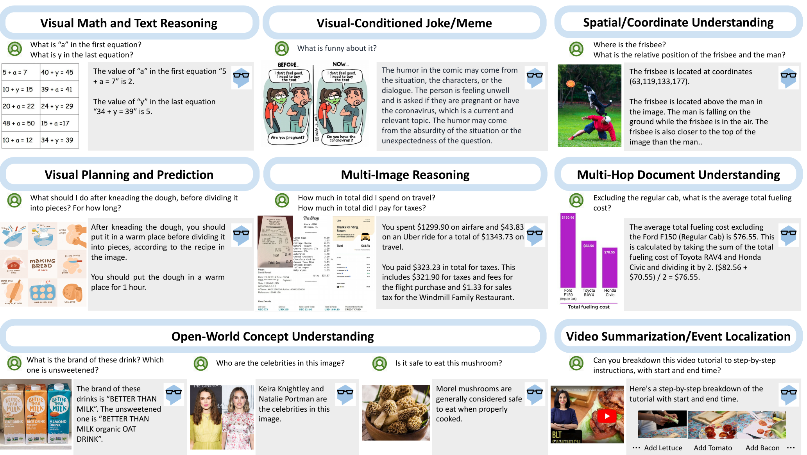
Examples from the figure: the user asks for the total travel cost over several receipts (multi-image reasoning). The user asks for the position of a frisbee in a photo (spatial understanding). The user asks what is funny in a comic (a joke or meme). In each panel the question is plain text and the answer is plain text. The image is the part that a text-only LLM cannot read.
MM-ReAct is not one trained model. It is a system in which ChatGPT calls a pool of vision experts (separate vision models), and it works by prompting. The authors compare this system design with the alternative that this lecture follows: to extend a language model to images by training it jointly (Yang et al., 2023). The conclusion: many useful tasks need both vision and language in one answer.
Which models existed before this need became clear? The next section gives the timeline.
History: from vision-only models to large multi-modal models
The question is when each kind of model appeared. The deck gives a timeline in three eras.
| Era | Year | Models named |
|---|---|---|
| Before fusion (vision-only era, then the language models that came next) | 2012 | AlexNet (Krizhevsky et al., 2012) |
| 2017 | Transformer (Vaswani et al., 2017) | |
| 2020 | GPT-3 (Brown et al., 2020) | |
| Vision and language fusion | 2021 | CLIP (Radford et al., 2021) and DALL·E |
| 2022 | Flamingo (Alayrac et al., 2022) and Stable Diffusion | |
| Large multi-modal models | 2023 | GPT-4V and LLaVA (Liu et al., 2023) |
| 2024 and later | Gemini, Claude, Qwen-VL (versions 1 to 3), InternVL |
The era names come from the deck. The deck draws the vision-only era at the left end of the timeline. The Transformer (2017) and GPT-3 (2020) are language-side milestones, so read the first three entries as the two ingredients, not as one family. In this lecture, a large multi-modal model (LMM) is a model that reads more than one kind of input, such as images and text, and that is built on a large language model.
Before that stage, the first systems joined an image encoder to a small language model. The next section describes the earliest one.
Neural image captioning: a CNN vector starts an RNN
The question is how an early model produced a sentence about an image. Image captioning means to write a short text that describes an image.
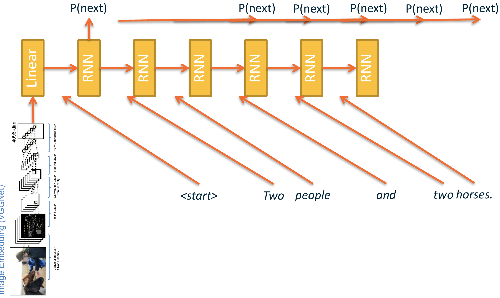
The figure shows three steps.
- A pre-trained visual encoder (VGGNet, a convolutional network) turns the image into one vector with 4096 numbers.
- A linear projection layer maps this vector to a space from which the caption can be generated. The deck calls it the “captionable” space.
- The projected vector is the first input of an RNN. An RNN (recurrent neural network) reads one token at a time and passes a state from step to step. The RNN then reads the words
<start>, “Two”, “people”, “and”, “two horses.” In each step it outputs P(next), the probability of every possible next word.
The image enters the language side only as the first input, through a single vector. This idea stays in all later models: take an encoder that was trained on images, and use a small learned layer to pass its output to the language model.
Today the language side is an LLM and the visual side is a Vision Transformer. The next section reviews these two kinds of model.
Unimodal models: each is strong in one input and weak in the other
A unimodal model works with one kind of input. The question is what each kind can and cannot do. The deck compares language models and vision models.
| Language models | Vision models | |
|---|---|---|
| Model families | Transformer-based auto-regressive LLMs; BERT (masked language modeling); the GPT series (causal language models) (Devlin et al., 2019; Brown et al., 2020) | CNNs for local feature extraction (ResNet, He et al., 2016); ViT, which splits an image into 16×16 patches (Dosovitskiy et al., 2021); DINO and MAE, which learn without labels (Caron et al., 2021; He et al., 2022) |
| Input | Tokenized text sequences | Pixel grids, turned into patch embeddings |
| Strong at | Reasoning, generation, question answering | Object recognition, detection |
| Weak at | Cannot perceive visual input | No semantic grounding in language |
A causal language model predicts each token from the tokens before it. A masked language model predicts a hidden token from the tokens around it. A patch embedding is the vector that represents one image patch.
To connect them, we need to decide several things. The next section lists them.
The design questions: representation, training, data, tasks and interface
Two deck pages state the open questions for a VLM. The first page asks how to encode the images: what representation should we use, and how will it be learned? The photos on that page (a beach scene, a baseball game and two dogs) stand for all the images the model must handle.
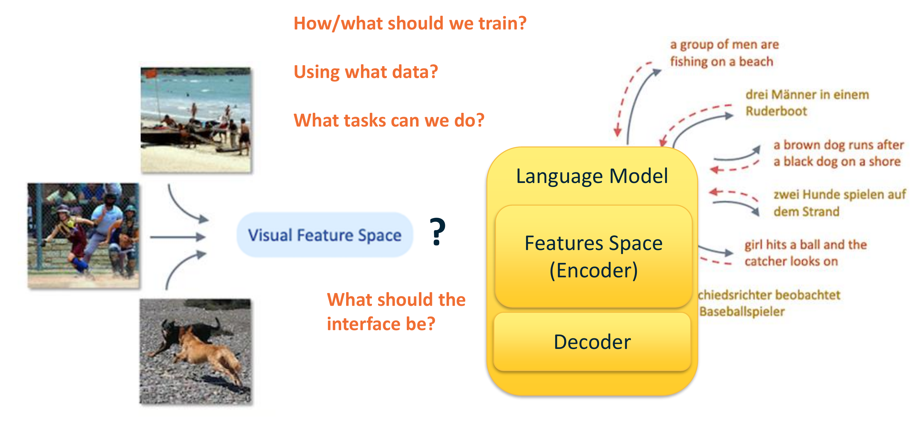
The second page adds four questions. Each question is a design choice.
- How and what should we train? This is the training method.
- Using what data? Image-text pairs, or other data.
- What tasks can we do? For example captioning or question answering. The right side of the figure shows captions in two languages.
- What should the interface be? The interface is how the visual feature space connects to the language model.
Part A answers these questions one method at a time. The first question, the image representation, comes next.
Image representations: an image encoder, with a ViT as the common choice
The question is which network turns an image into a representation. The deck says: use an image encoder. The architecture can be any network, for example ResNet or a Vision Transformer (ViT). Its weights can start random, or come from supervised (SL) or self-supervised (SSL) pre-training, such as DINO versions 1 to 3 and MAE.
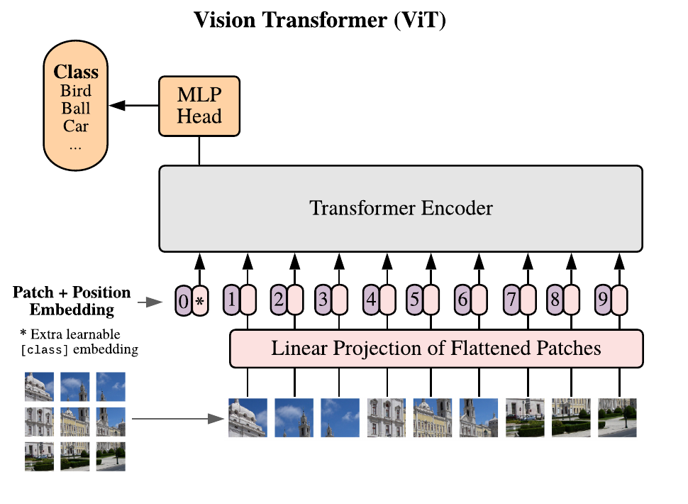
The figure shows how a ViT works.
- Split the image into fixed-size patches (here nine patches, in a 3×3 grid).
- Flatten each patch to one vector and apply a linear projection. This gives one embedding per patch.
- Add a position embedding to each patch embedding, so the model knows where each patch came from. Add one extra learnable “class” embedding at position 0.
- Feed the sequence to a standard Transformer encoder. An MLP head on the class output predicts the label.
With 16×16-pixel patches, a 224×224-pixel image gives 14 × 14 = 196 patches (computed here). The ViT output is therefore a sequence of vectors, as an LLM expects. This is why a ViT is a natural image encoder for a VLM.
The encoder is one part. How the encoder and the language model fit together is the next question.
Architecture taxonomy: dual-encoder, encoder-decoder and decoder-only
The question is how to arrange the image encoder and the language model. The deck names three architectures.
| Architecture | How it works | Examples | Property |
|---|---|---|---|
| Dual-encoder | Two separate encoders map image and text to one shared embedding space | CLIP | Trained with a contrastive loss. It cannot generate text by itself. |
| Encoder-decoder | The encoder processes the image. The decoder generates the text. | Flamingo, CogVLM | Cross-attention layers connect the two. This is more parameter-efficient. |
| Decoder-only | Image tokens go in front of the text tokens, inside one LLM | LLaVA, GPT-4V | The simplest method. It uses the full LLM. It was the most common method in 2023 and 2024. |
Cross-attention is attention in which the queries come from one sequence (the text) and the keys and values come from another (the image features). Part A explains it with Flamingo. A contrastive loss is a loss that pulls matching image-text pairs together and pushes other pairs apart (Lecture 3). An embedding space is a vector space in which each input is a point.
The deck adds one more design choice: freeze the vision encoder, or fine-tune it. A frozen ViT aligns faster and forgets less. A trained ViT is more flexible. The deck states the architecture of GPT-4V as decoder-only; OpenAI (2023) does not publish that detail, so treat this entry as the deck's classification.
The three architectures also differ in where the image and the text meet. The next section describes this as early and late fusion.
Early fusion mixes the modalities from the first layer; late fusion mixes them at the end
Fusion means to combine the information of two modalities. The question is at which depth the model does it.
| Early fusion | Late fusion | |
|---|---|---|
| Where the modalities meet | At the token level; joint attention from layer 1 | Each modality is encoded separately; they meet at the final representation layer |
| Information flow between modalities | Higher | Lower |
| Cost | Expensive: O((Ntext + Nimg)²) | Lower |
| Other property | Best for fine-grained grounding | Modular: swap an encoder easily. Best for retrieval and classification. |
| Examples | Unified-IO, PaLI | CLIP, AudioCLIP |
In the cost entry, Ntext is the number of text tokens and Nimg is the number of image tokens. Self-attention compares every token with every other token, so its cost grows with the square of the sequence length. “Fine-grained grounding” means to link a word to a small region of the image.
A toy example (computed here, toy values): with Ntext = 100 and Nimg = 576, early fusion compares (100 + 576)² = 456,976 pairs. Two separate encoders compare 100² + 576² = 341,776 pairs. The late-fusion saving is the cross term, 2 × 100 × 576 = 115,200 pairs. Image tokens usually outnumber text tokens, so the image side dominates the cost in both cases.
CLIP is the main example of late fusion. The next section shows how it works and where it is limited.
CLIP aligns images and text by contrastive learning, but its representation is coarse
This is the Lecture 3 model, so we recall only what the next sections need. CLIP uses contrastive learning as its method of alignment. It trains on 400 million image-text pairs from the internet (Radford et al., 2021). It has one image encoder (a ResNet or a ViT) and one text encoder.
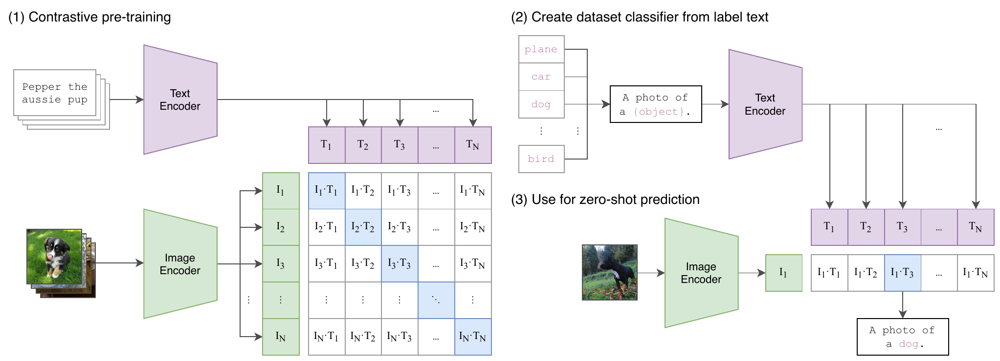
The grid has one cell for each image-text pair. The cell holds the dot product Ii · Tj: image vector i times text vector j. Training raises the diagonal cells (matching pairs) and lowers all other cells. For zero-shot prediction (a prediction on classes the model was not trained on, with no extra examples), CLIP writes each label as a sentence, such as “A photo of a dog”, encodes it, and picks the label with the highest dot product with the image vector.
The deck names one downside: the representation is coarse-grained. One vector must hold, somewhere, the objects, their relations and their locations. CLIP gives no direct way to point at a region of the image.
Can a CLIP-style model locate objects? The next section shows that it can, if we change its heads.
Open-vocabulary detection: CLIP-style training also finds objects named by text
Object detection means to find objects in an image and give each a box and a label. A normal detector knows only a fixed list of classes. An open-vocabulary detector accepts any class name as text. The question is how to transfer a contrastive image-text model to this task.
![Two panels. Left, image-level contrastive pre-training: a text transformer encoder and a vision transformer encoder with token pooling and projection give a text embedding and an image embedding, and a contrastive loss runs over images in a batch. Right, transfer to open-vocabulary detection: the vision encoder outputs one token per image patch. A linear projection gives object image embeddings and an MLP head gives boxes. Query embeddings from the text encoder for giraffe, tree and car are matched with the object embeddings. A set prediction loss runs over the objects in an image.](slides/assets/partA/a-minderer2022-fig1.png)
Minderer et al. (2022) make a small set of changes to a ViT that was pre-trained contrastively.
- Remove the final token pooling layer. The encoder then gives one output token for each image patch.
- Attach to each output token a linear projection (it gives an embedding for the object in that region) and an MLP head (it gives the box as x, y, width, height).
- Embed each query string, such as “giraffe”, with the text encoder. Compare it with each object embedding. A high score assigns the class to that box; a token with no match gets “no object”.
- Fine-tune on standard detection data. A set prediction loss compares the predicted objects with the true objects of the image.
At test time the queries can be new class names. The method also accepts an image as a query, for one-shot detection (Minderer et al., 2022, Fig. 1 caption).
The second paper, Minderer et al. (2023), attacks the lack of box labels. It uses an existing detector to write pseudo-boxes (boxes made by a model, not by humans) for web image-text pairs. The queries are N-grams (short word sequences) taken from the text of the image, such as the file name or alt text. The figure shows three examples.
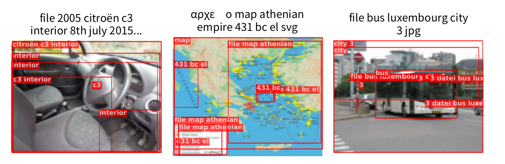
The labels follow the text, not the true objects. Some labels are useful (“interior”, “bus”). Others are noise (“431 bc el”, “file map athenian”). The authors filter boxes by a score threshold: a box needs a score of at least 0.1, and an image needs at least one box with a score above 0.3 (Minderer et al., 2023, Fig. A2 caption). With this self-training, they report that AP on the LVIS rare classes rises from 31.2% to 44.6% for an L/14 model, on classes for which the model saw no human boxes (Minderer et al., 2023, abstract).
A VLM design leaves four questions open
The previous section ended with open-vocabulary detection, which uses CLIP to match image regions to any text label. That model only matches or localizes. It does not write text. A vision-language model (VLM) that answers questions must connect an image to a language model (LM), a model that predicts text. The connection raises four design questions.
- How and what to train. The model parts are the image encoder, the connection and the LM. We can train all of them or only some.
- Which data. Image-text pairs, web pages with images, or hand-labelled examples give different abilities.
- Which tasks. Examples are captioning, answering questions about an image, and following instructions.
- What the interface is. The interface is the form in which image information enters the LM.
The rest of this part answers these questions with four models: Flamingo, BLIP, BLIP-2 and, as the gap that remains, GPT-4V. The next section starts with the interface.
Embedding space alignment maps image features into the token space of the LM
An LM reads tokens. Each token is a vector in the LM token embedding space. An image encoder outputs a different kind of object: a grid of feature vectors with spatial structure. Embedding space alignment is the step that turns image features into vectors that the LM can read as if they were tokens. The module that does this step is the connector. The goal is to bridge two differences: the shape (a grid against a sequence) and the distribution (the values of the two vector sets).
The deck lists five methods. Three are connectors, one changes the LM side, and one is a training loss.
| Group | Method | What it does | Used in |
|---|---|---|---|
| 1. Connector | Linear projector | A small multilayer perceptron (MLP) of 1 or 2 layers maps each image patch feature to the LM hidden size. One patch gives one token. | LLaVA (Part B) |
| 1. Connector | Q-Former | A fixed set of learnable query vectors attends to the image features. The output has a fixed length, whatever the input size. | BLIP-2 |
| 1. Connector | Perceiver Resampler | N learnable latent vectors cross-attend to the image features. A small image and a large image both give N outputs. | Flamingo |
| 2. LM side | Adapters (LoRA) | The LM weights stay frozen. A small trainable low-rank path is added in parallel to learn the visual tokens. | Several VLMs |
| 3. Training loss | Joint objective | A contrastive loss pulls image vector \(v\) and text vector \(t\) of the same pair together. A captioning loss predicts text \(t\) from \(v\). Some models use both. | BLIP, BLIP-2 |
Three terms need a definition. A frozen module keeps its weights fixed during training. Cross-attention is attention in which the queries come from one set of vectors and the keys and values come from another set. LoRA (low-rank adaptation) adds a pair of small matrices, A and B, next to a frozen weight matrix. Only A and B are trained, and their output is added to the output of the frozen weight. The deck gives one reason to freeze the LM: the LM keeps its language skills while it learns to read visual tokens.
The deck gives two benefits for the fixed-size outputs. The Q-Former collapses a variable number of features into a fixed number of queries. The Perceiver Resampler keeps the visual token count constant at any image resolution. The two connectors therefore keep the cost of the LM independent of the image size. Flamingo is the first example.
Flamingo learns a new task from a few examples in the prompt
Flamingo (Alayrac et al., 2022) is a VLM from DeepMind. Its main result is in-context learning (also called few-shot learning). In-context learning means that the model learns a task from a few worked examples placed in its input, with no change to its weights. LMs showed this ability for text. Flamingo shows it for prompts that mix images and text.
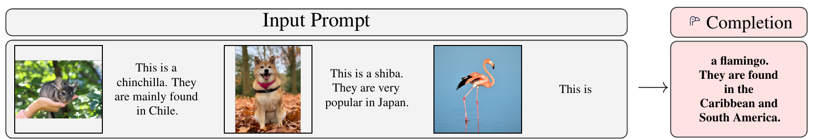
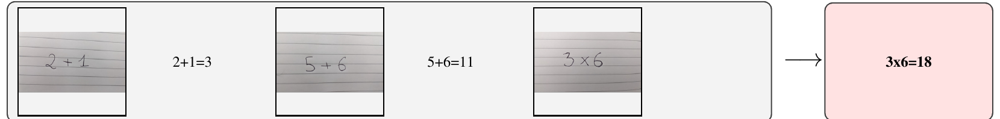
In both rows the task is not named. The examples define it. The deck calls this an emerging property: the model was not trained for these tasks. Flamingo needs an architecture that accepts a prompt with several images between pieces of text. The next sections describe it.
Flamingo inserts gated cross-attention layers into a frozen LM
Flamingo keeps the pretrained LM frozen and inserts new layers between its blocks. Each new layer is a GATED XATTN-DENSE layer. It has two parts: a cross-attention in which the text reads the image features, and a feed-forward layer (FFW), a small network applied to each position. Both parts are gated.
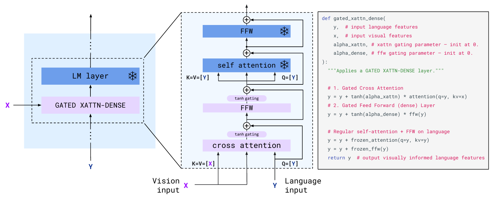
The pseudo-code in the figure gives the two gated steps. In them, \(y\) is the language features, \(x\) is the visual features, and \(q\) and \(kv\) are the queries and the keys-values of the attention.
\[ y \leftarrow y + \tanh(\alpha_{\text{xattn}}) \cdot \text{attention}(q=y,\ kv=x) \] \[ y \leftarrow y + \tanh(\alpha_{\text{dense}}) \cdot \text{ffw}(y) \]Here \(\alpha_{\text{xattn}}\) and \(\alpha_{\text{dense}}\) are learnable scalars, one pair per layer. Each starts at 0 (Section 2.2 of the paper). Because \(\tanh(0)=0\), the new layer adds nothing at the start. The model then gives the same output as the original LM. Training raises the gates slowly, and the visual input enters the LM without disturbing it. The paper reports that removing the 0-initialized gating lowers the overall score by 4.2% and also makes training less stable (Section 3.3).
After the gated layers, the frozen self-attention and frozen FFW of the LM run as usual. Only the new layers are trained. The next section shows where these layers sit in the full model.
Flamingo mixes images and text in the embedding space of a 70B LM
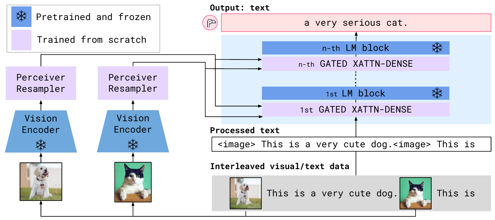
Flamingo has three parts.
- Vision encoder: a frozen Normalizer-Free ResNet (NFNet, model F6). It was pretrained with a contrastive loss, as in CLIP, on Flamingo's own image-text data (Section 2.1).
- Connection module: the Perceiver Resampler, and the gated cross-attention plus dense layers.
- Language model: a frozen Chinchilla LM with 70B parameters. The paper also builds 1.4B and 7B versions, called Flamingo-3B and Flamingo-9B. The largest, with 80B parameters in total, is called Flamingo-80B (Section 2.2).
The text prompt contains a tag at the position of each image. When the model writes a token, its cross-attention reads the visual tokens of the image that came just before that token (Section 2.3). The model sees one image at a time through cross-attention. The earlier images stay available through the self-attention of the LM. This rule lets the model accept more images at test time than it saw in training. The Perceiver Resampler is the next component.
The Perceiver Resampler turns any number of image features into a fixed number of tokens
A vision encoder gives a grid of features. A video gives one grid per frame. The number of features changes with the image size and the frame count. The LM cross-attention layers would cost more for more features. The Perceiver Resampler maps a variable number of features to a fixed number of output tokens. The idea comes from the Perceiver (Jaegle et al., 2021): a small set of learned vectors reads a large input through attention.
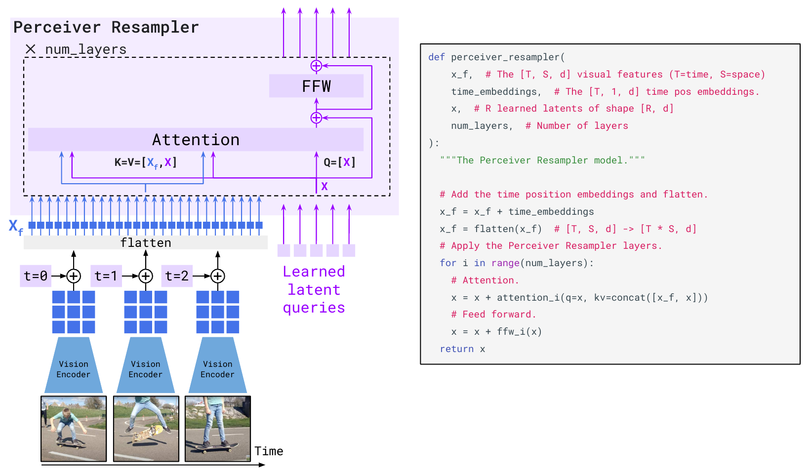
Follow the steps in the figure. Symbols: \(T\) is the number of frames, \(S\) is the number of spatial positions per frame, \(d\) is the feature size, and \(R\) is the number of learned latents.
- The vision encoder gives visual features \(X_f\) of shape \([T, S, d]\). An image is the case \(T=1\).
- For a video, add a learned time embedding to each frame. This tells the model the frame order.
- Flatten \(X_f\) to shape \([T\cdot S, d]\).
- Take \(R\) learned latent vectors \(X\), of shape \([R, d]\). They are model parameters.
- Run attention. The queries are \(X\). The keys and values are \(X_f\) joined with \(X\). The deck notes that joining the latents to the keys and values gives better results.
- Add the result to \(X\), apply a feed-forward layer, and add again. Repeat for the number of layers. The output is \(R\) tokens, whatever the size of the input.
The figure shows 5 output tokens so that it stays readable. The Flamingo paper uses 64 (Section 2.1). The paper also reports that this resampler gives better results than a plain Transformer or an MLP in its ablation (Section 3.3). The next question is which data trains the whole model.
Flamingo trains on three kinds of web data
Few-shot ability needs training data in which images and text alternate, because a prompt has that form. Flamingo uses a mixture of three kinds of data, all scraped from the web.
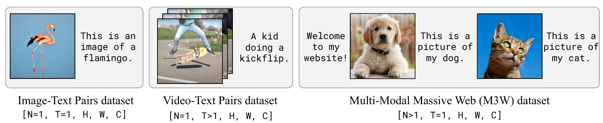
| Dataset | Content | Size |
|---|---|---|
| M3W (MultiModal MassiveWeb) | Text and images from the HTML of web pages, with each image at its position in the text | About 43 million pages; 185M images and 182 GB of text (Section 2.4, Appendix F) |
| ALIGN | Images with alt-text | 1.8 billion images |
| LTIP (Long Text & Image Pairs) | Image-text pairs with longer descriptions, collected for better quality | 312 million pairs |
| VTP (Video & Text Pairs) | Short videos (about 22 s on average) with a sentence | 27 million videos |
The paper states that M3W gives the few-shot ability. Removing M3W lowers the overall score by more than 17% in the ablation (Section 3.3). Training sequences use at most 5 images each. The paper trains on a weighted sum of the text loss on each dataset. Do the results show the few-shot ability? The next section answers.
A larger Flamingo and more examples in the prompt both give better results
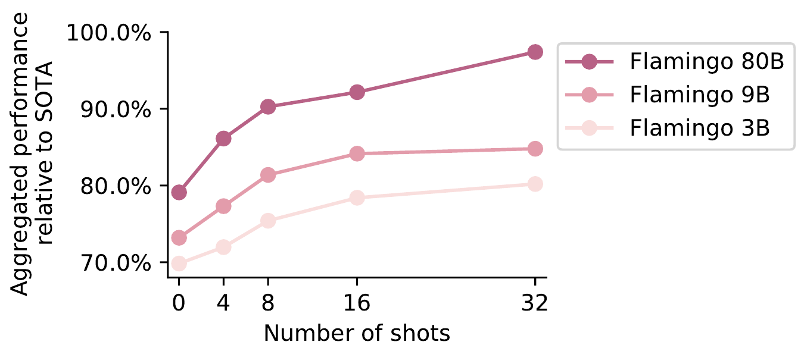
The vertical value is a score relative to the state of the art (SotA) of models that were fine-tuned on each task. A value of 100% would match those models. Flamingo does not fine-tune. Values read from the chart (approximate):
| Model | 0 shots | 32 shots |
|---|---|---|
| Flamingo 3B | about 70% | about 80% |
| Flamingo 9B | about 73% | about 85% |
| Flamingo 80B | about 79% | about 97% |
Two trends follow. First, at every shot count, the larger model scores higher. Second, each line rises with the shot count, and the 80B line rises most. The paper states that the largest model uses the added shots best (Section 4.2.1 of v1). The model trained with at most 5 images per sequence, but it still improves with 32 shots at test time. This follows from the one-image cross-attention rule in the previous sections.
BLIP cleans noisy web text and trains one model for understanding and generation
BLIP (Li et al., 2022) solves two problems that earlier VLMs had.
Problem 1: one task type per model. Some earlier models only understood: they picked the best text for a photo. Others only generated: they wrote a caption. BLIP trains one model that does both. In the paper, the model has an image encoder and a text part that can run as a text encoder or a text decoder, with shared layers (Section 3.1).
Problem 2: noisy web text. The text of web images is often wrong or unrelated. BLIP cleans the data with a method called CapFilt (captioning and filtering).
- A captioner writes a new text \(T_s\) (synthetic text) for each web image.
- A filter checks each web text \(T_w\) and each synthetic text \(T_s\) against the image. It removes the texts that do not match.
- The new model trains on the pairs that pass, together with human-annotated pairs.
The paper starts the captioner and the filter from the same pretrained model and fine-tunes each on a small human-annotated set, COCO (Section 3.3).
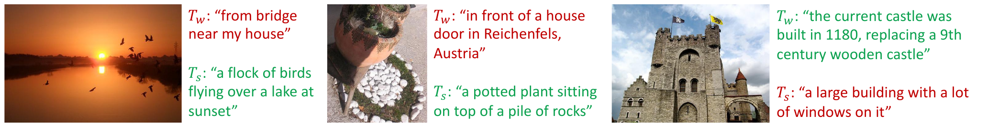
BLIP addresses the quality of the data. It does not change how an image enters a large LM. BLIP-2 addresses that.
BLIP-2 trains only a small Q-Former between a frozen image encoder and a frozen LM
Flamingo trains a large connection module, which costs much compute. BLIP-2 (Li et al., 2023) freezes both the image encoder and the LM. It trains only one small module, the Q-Former (Querying Transformer).
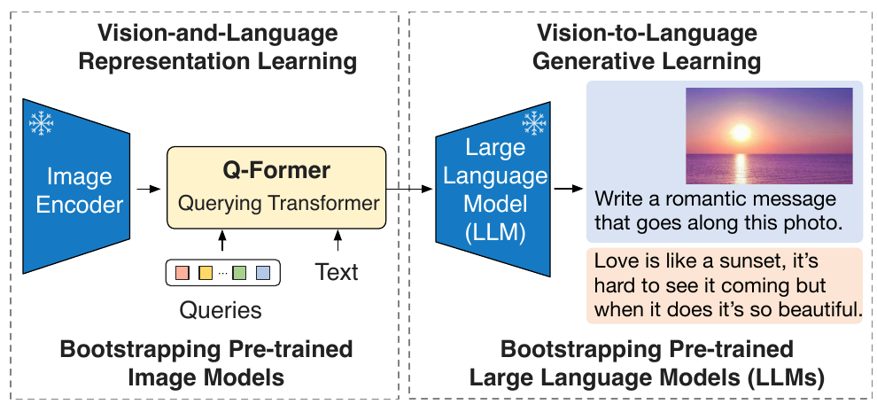
The Q-Former holds 32 learnable queries of size 768. Its output has shape 32 × 768. The image features from a ViT-L/14 encoder have shape 257 × 1024, so the Q-Former output is much smaller (Section 3.1). This works as a bottleneck: the queries keep the visual information that matters for the text.
- Stage 1 (representation learning). The Q-Former connects to the frozen image encoder. It trains with three losses: image-text contrastive (ITC), image-grounded text generation (ITG) and image-text matching (ITM), a yes-or-no decision whether an image and a text match (Section 3.2).
- Stage 2 (generative learning). A fully connected layer projects the Q-Former output to the input size of a frozen LLM. These vectors are placed before the text embeddings, and they act as a soft visual prompt (Section 3.3).
The deck lists the parts of BLIP-2: an EVA-CLIP image encoder (contrastive pretrained), the Q-Former, and an LM, which is either OPT or FLAN-T5. Compared with Flamingo, only the small Q-Former and one projection layer are trained. The result of this choice is in the next section.
BLIP-2 beats Flamingo-80B on VQAv2 with far fewer trainable parameters
Visual question answering (VQA) is the task in which the model answers a text question about an image. The table below gives zero-shot VQA scores. Zero-shot means the model sees no example from the benchmark in its training or prompt. Higher is better. The benchmarks are VQAv2 (general questions), OK-VQA (questions that need outside knowledge) and GQA (questions that need reasoning over the scene).
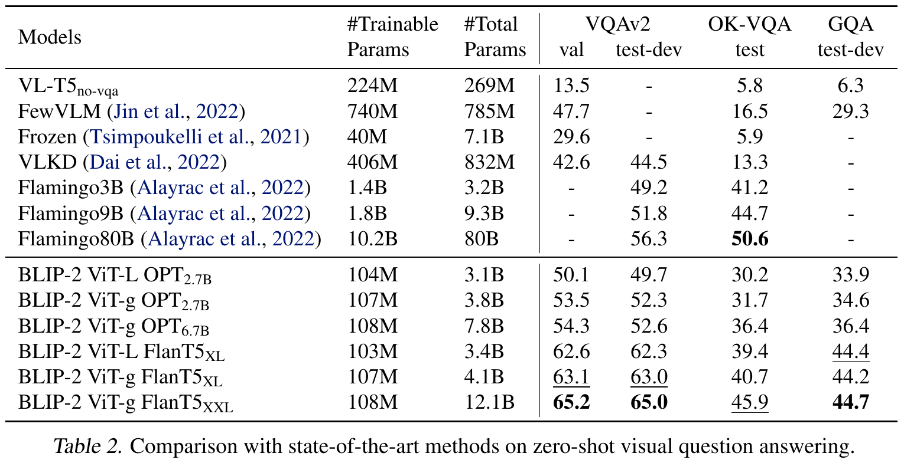
| Model | Trainable params | Total params | VQAv2 test-dev | OK-VQA test | GQA test-dev |
|---|---|---|---|---|---|
| Frozen | 40M | 7.1B | not reported (29.6 on val) | 5.9 | not reported |
| Flamingo-80B | 10.2B | 80B | 56.3 | 50.6 | not reported |
| BLIP-2 ViT-g FlanT5-XXL | 108M | 12.1B | 65.0 | 45.9 | 44.7 |
Compare the last two rows (values from Table 2; the ratios are computed here).
- On VQAv2 test-dev, BLIP-2 scores 65.0 and Flamingo-80B scores 56.3, a difference of 8.7 points.
- BLIP-2 trains 108M parameters and Flamingo-80B trains 10.2B, about 94 times more.
- BLIP-2 is not best on every benchmark. On OK-VQA, Flamingo-80B scores 50.6 and BLIP-2 scores 45.9.
Among the BLIP-2 rows, the larger LM gives the higher score. FlanT5-XXL beats FlanT5-XL, which beats the OPT rows, with the same image encoder. A good connection module and a strong frozen LM together give the result. The deck does not claim more than this. Does this solve the problem? The last section shows what remains.
Flamingo, BLIP-2 and GIT lack instruction following, and GPT-4V has it
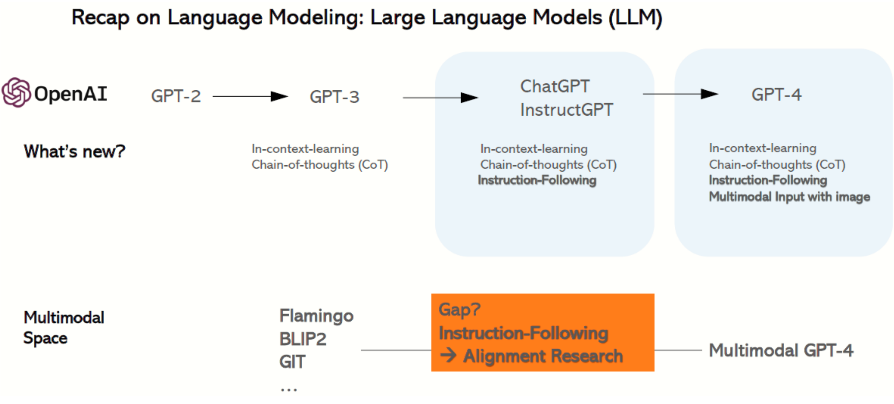
The figure compares two lines of work. In text-only LMs, GPT-3 added in-context learning and chain-of-thought prompting. ChatGPT and InstructGPT added instruction following, which means the model does what a user asks in plain language. GPT-4 added image input to this. In the multimodal line, Flamingo, BLIP-2 and GIT show in-context learning and strong captioning and VQA scores. The deck marks the step to a multimodal GPT-4 as a gap: instruction following, which it assigns to alignment research.
VLMs improved in data, training stages and some design details, but no ablation shows which matter
The GPT-4V gap in the previous section leaves one question: what changed in the open models that closed much of it? The deck gives a list taken from Kira (2026). The list has two kinds of items: things that grew, and design changes.
- Scale. Models, data sets and training budgets are larger.
- Several training stages. A training stage is one phase with its own data and its own set of trainable parameters. The stages are pre-training, alignment of the image side to the language side, supervised fine-tuning (SFT) or instruction tuning, reinforcement learning from human feedback (RLHF), and post-training for reasoning.
- More varied data, and synthetic data, that is, data that another model wrote.
- Design changes: input at several resolutions, a long context, and position embeddings that carry time for video.
- Many more benchmarks, across many tasks.
The next three sections follow one model family, Qwen-VL, through three versions. Each version changes one item from this list. The first one shows the training stages.
Qwen-VL trains in three stages, and each stage changes which parts can learn
The question: how do you train a VLM when the language model and the vision encoder start as separate, already trained models? Bai et al. (2023) answer with three stages. The figure shows the three stages side by side.
![Three diagrams in a row, one per training stage of Qwen-VL. Each diagram stacks a ViT image encoder at the bottom, a cross-attention module with learnable query embeddings in the middle, and the language model QwenLM at the top, which also receives text. In stage 1 the ViT and the cross-attention module are marked trainable and the language model is marked frozen; the image is low resolution and the data are image-text pairs. In stage 2 all three parts are trainable; the image is high resolution and the data are multi-task and interleaved vision-language data. In stage 3 the ViT is frozen and the other two parts are trainable; the data are chat-style interleaved vision-language data.](slides/assets/partA/a-bai2023-fig3.png)
Each diagram has the same three parts. The ViT is the vision encoder (see Part A, where image encoders are defined). The cross-attention module is the adapter between the two sides. It uses a fixed group of learnable query vectors. They read the image features and return a sequence of exactly 256 vectors (Bai et al. 2023, Section 2). QwenLM is the language model, Qwen-7B.
What differs between the three diagrams is which parts are frozen (not updated) and which learn:
| Stage | Data | Image size | ViT | Adapter | Language model |
|---|---|---|---|---|---|
| 1. Pre-training | Image-text pairs. 5 billion collected, 1.4 billion left after cleaning | 224 × 224 | learns | learns | frozen |
| 2. Multi-task pre-training | Fine-grained annotations: captioning, VQA, grounding, OCR, interleaved image-text | 448 × 448 | learns | learns | learns |
| 3. Supervised fine-tuning | Chat-style instruction data, about 350 thousand examples | 448 × 448 | frozen | learns | learns |
Stage 1 runs for 50,000 steps and uses about 1.5 billion image-text samples. It keeps the language model fixed so that the adapter and the ViT learn to produce features the language model can use. Stage 2 raises the image size from 224 to 448 pixels per side and trains all parts. Stage 3 freezes the ViT again and teaches the model to follow instructions in chat form.
Stage 2 also adds a way to point at image regions. A bounding box is written as plain text, with coordinates scaled to the range 0 to 1000 and wrapped in the special tokens <box> and </box>. The language model then outputs a region in the same way it outputs a word (Bai et al. 2023, Section 2).
Stage 2 and 3 still resize every image to one square. The next question is what happens when the image keeps its own shape.
Qwen2-VL accepts any resolution, so the number of visual tokens follows the image size
Qwen-VL resizes every image to one fixed square, 448 × 448 pixels after stage 1. A wide page or a thin strip then loses detail or gets stretched. Wang et al. (2024) remove this step. An any-resolution input is an image that enters the encoder at its own height and width. The encoder then returns a number of visual tokens (the vectors that the language model reads in place of the image) that depends on the image size.
![Diagram of Qwen2-VL. At the bottom are four inputs of different shapes: a tall web page 1092 wide and 8204 high (Picture 1), a thin strip of a formula 224 wide and 28 high (Picture 2), a landscape photo 1260 wide and 700 high (Picture 3), and a video 644 wide and 336 high lasting 16 seconds (Video 1). An arrow marked native resolution input leads into a vision encoder. Above it a row of colour-coded tokens shows 11427 tokens for Picture 1, 8 tokens for Picture 2, 1125 tokens for Picture 3 and 2208 tokens for Video 1, mixed with text tokens. All tokens enter the QwenLM decoder at the top.](slides/assets/partA/a-wang2024-fig2.png)
The figure shows four inputs. Their pixel sizes differ by a large factor, and so do their token counts:
| Input | Width × height (pixels) | Tokens (figure) |
|---|---|---|
| Picture 1, a long web page | 1092 × 8204 | 11,427 |
| Picture 2, one line of a formula | 224 × 28 | 8 |
| Picture 3, a photo | 1260 × 700 | 1,125 |
| Video 1, 16 seconds | 644 × 336 | 2,208 |
The token counts follow one rule. The ViT cuts the image into patches of 14 × 14 pixels. An MLP layer then merges each block of 2 × 2 neighbouring patches into one token. One token therefore covers 28 × 28 pixels, and the count is about (width ÷ 28) × (height ÷ 28). Check with Picture 3: 1260 ÷ 28 = 45 and 700 ÷ 28 = 25, so 45 × 25 = 1,125 tokens (computed here). Picture 1 gives 39 × 293 = 11,427 tokens (computed here). The paper's own example is a 224 × 224 image: it gives 16 × 16 = 256 patches, merged to 64 tokens, and with the two marker tokens that wrap an image the LLM receives 66 (Wang et al. 2024, Section 2.1).
To work at any size, the ViT drops its fixed position embeddings and uses 2D rotary position embeddings (2D-RoPE), which encode the row and the column of each patch. Qwen2-VL also replaces the usual one-dimensional rotary embedding in the language model with M-RoPE. M-RoPE splits the position into three parts: time, height and width. For text the three parts are equal, so it behaves like the usual 1D version. For video, the time part counts frames.
Video is sampled at two frames per second. A 3D convolution of depth two merges each pair of frames. The paper caps the total at 16,384 tokens per video by lowering the frame resolution. The model sizes are 2B, 7B and 72B, and all use a 675M-parameter ViT (Wang et al. 2024, Table 1).
Qwen2-VL keeps the same language model recipe. The next question is what a newer model changes when it is also larger.
Qwen3-VL adds a mixture-of-experts model, DeepStack and text timestamps
Bai et al. (2025) describe the third generation. The figure has the same layout as the Qwen2-VL figure: inputs at their native resolution at the bottom, a vision encoder, a row of tokens, and a decoder at the top.
![Diagram of Qwen3-VL. At the bottom are a tall web page 1248 wide and 9376 high, a thin formula strip 256 wide and 32 high, a photo 1440 wide and 800 high, and a video 736 wide and 448 high lasting 8 seconds. A native resolution input arrow leads into the vision encoder. Above it, a token row shows 11427 tokens for Picture 1, 8 for Picture 2, 1125 for Picture 3, and for the video a run of frame tokens with a timestamp written as text before each group. The tokens enter the Qwen3 LM dense or MoE decoder. At the right a dashed box labelled DeepStack shows features from several vision encoder layers entering the first LLM blocks.](slides/assets/partA/a-bai2025-fig1.png)
Four changes are visible in the figure and in the report.
- More parameters, fewer in use. The largest model, Qwen3-VL-235B-A22B, is a mixture-of-experts (MoE) model. It holds 235 billion parameters in total, and 22 billion are active for each token. The report also lists dense models of 2B, 4B, 8B and 32B, and a 30B-A3B MoE model (Bai et al. 2025, Section 2). A large total size with few active parameters keeps the cost of each token low.
- DeepStack. The vision encoder gives features at three depths. Separate merger modules turn them into visual tokens, and these tokens are added to the hidden states of the first three LLM layers (Bai et al. 2025, Section 2.2). Later sections of this page (Part C) return to this design.
- Text timestamps for video. Each group of frames starts with a time written as text, such as "<3.0 seconds>". Qwen2.5-VL tied the time to a position index; the report says this made the indices very large for long video (Section 2.3).
- Interleaved MRoPE. The time, height and width parts of M-RoPE are now spread across the low and high frequencies. In Qwen2-VL each part held one block of frequencies, which the report links to weaker long-video results (Section 2.1).
The vision encoder is SigLIP-2, trained further at dynamic resolution. A two-layer MLP merges 2 × 2 patch features into one token. The figure counts match the Qwen2-VL figure for the same page and photo: Picture 1 gives 11,427 tokens and Picture 3 gives 1,125, which means one token covers 32 × 32 pixels here (computed here from 1248 ÷ 32 = 39, 9376 ÷ 32 = 293).
Training now has four stages. The table gives them as in the report (Table 1 of Bai et al. 2025):
| Stage | Goal | Trainable | Tokens | Sequence length |
|---|---|---|---|---|
| S0 | Vision-language alignment | merger only | 67B | 8,192 |
| S1 | Multimodal pre-training | all parts | about 1T | 8,192 |
| S2 | Long-context pre-training | all parts | about 1T | 32,768 |
| S3 | Ultra-long-context adaptation | all parts | 100B | 262,144 |
S0 resembles stage 1 of Qwen-VL: only the connecting module learns. After post-training (SFT, distillation and reinforcement learning), the whole pipeline is the "multi-stage training" of the first section. The report details this in a later section (Part C).
The next two sections list what the model can do, as the Qwen team states it.
Qwen3-VL lists eight abilities: agents, code, space, long video, reasoning, recognition, OCR and text
The question: which abilities does the newest model claim? The deck quotes the project README, which lists eight. They are the team's claims, and the report tests them with benchmarks (Bai et al. 2025).
| Ability | What the README says |
|---|---|
| Visual agent | Operates PC and phone screens: finds elements, understands their function, calls tools, finishes tasks. |
| Visual coding | Writes Draw.io, HTML, CSS and JavaScript from images or video. |
| Spatial perception | Judges positions, viewpoints and occlusion. Stronger 2D grounding (marking where an object is) and new 3D grounding. |
| Long context and video | 256K tokens natively, expandable to 1M. Books and hours of video, with second-level time indexing. |
| Multimodal reasoning | Stronger on STEM and mathematics: causal analysis and answers with evidence. |
| Visual recognition | Broader pre-training data, to recognise people, anime, products, landmarks, plants and animals. |
| OCR | Reads text in more languages and in poor images; parses long documents better. |
| Text understanding | On par with a text-only LLM of the same family. |
Two numbers need a check against the report. The 256K window is correct: the models train up to 262,144 tokens in stage S3. The 1M figure comes from an extension at inference time (Bai et al. 2025, appendix). For OCR the deck says 32 languages, up from 10. The report says 39 languages, up from 10 languages besides Chinese and English. In 32 of the 39, the model passes 70% accuracy in the report's own test (Section 5). The 32 counts the languages where the model meets that threshold, not the languages it supports.
A list of claims is not a result. The summary below turns them into trends.
The summary: simpler designs, more data and a longer training pipeline
The summary slide of the source lecture (Kira 2026) gives five moves. Each is a change from an older practice to a newer one.
| From | To | Example in this part |
|---|---|---|
| Captioning | Reasoning and action | Qwen3-VL as a screen-operating agent |
| Static images | Long multimodal streams | Qwen2-VL video; the 256K context of Qwen3-VL |
| Human-written data | Synthetic, model-written data | Not shown by a figure here; the report describes it |
| SFT only | Full pipelines with reinforcement learning | Qwen3-VL post-training |
| Separate parts for each modality | Some unified autoregressive plus diffusion models, still early | See Part C |
The slide heading states the overall direction: simplify the design, and scale the data and the training. The design stays close to the Part A pattern of an image encoder, a connecting module and a language model. What grew is the data and the number of stages around it.
The last section of the part gathers the whole path.
Part A close: LLMs learned to see when the image became vectors that the LLM reads like words
Part A started with the question of how an LLM can read an image. The answer is one idea, repeated in each method: turn the image into vectors and give them to the language model as if they were words. Each method fixed a problem of the one before it.
- Image captioning and early fusion joined image and text, but each model served one task.
- CLIP aligned image and text vectors with contrastive pre-training, which gave zero-shot recognition and open-vocabulary detection.
- Flamingo, BLIP and BLIP-2 connected a frozen vision encoder to a frozen language model with a small trainable module. The model could then answer questions about images, but a gap to GPT-4V remained.
- Qwen-VL, Qwen2-VL and Qwen3-VL closed much of the gap with staged training, any-resolution input, larger data and a longer pipeline.
These models are large and complex. Part B builds the simplest form of this idea, LLaVA, one step at a time in code. The question for Part B: what is the smallest design, and the least data, that makes an LLM answer questions about an image?
Make VLM chat
Part A showed how a vision encoder connects to an LLM. Part B asks how to make the result answer questions and follow instructions. It follows LLaVA step by step, then repeats the same steps in code with nanoVLM.
Part B has three segments: Problem & foundations, LLaVA: A simple instruction tuning method for VLM, and A small demo: nanoVLM. This fragment covers the first two. The third segment starts after the LLaVA benchmark.
This part follows Georgia Tech CS 8803-VLM, Lecture 6 (Wang et al. (2026)) and the nanoVLM repository (Wiedmann et al. (2025)). The text is ours; the results come from the papers cited.
The methods of Part A name what is in an image
Part A ended with models that connect an image to text. The first question of Part B is what these models return. Four methods from Part A, applied to one photo, give four kinds of output. The table lists them. The outputs are illustrative.
| Method | Text input | Output |
|---|---|---|
| Classify (CLIP) | “a taxi”, “a bus”, “a bicycle” | best label: “a taxi” |
| Detect (OWL-ViT) | “person”, “ironing board” | one box for each |
| Caption (BLIP) | none | a short sentence that names the scene |
| Short answer (BLIP-2) | “What color is the taxi?” | “yellow” |
Each method says what is in the image. None of them can answer “What is unusual about this image?”. The photo in the next section shows why.
Recognizing objects is not the same as following an instruction
The photo shows a man who irons clothes on the back of a taxi. A user asks: “What is unusual about this image?” The model must do three things.
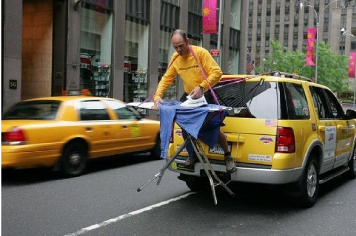
- Recognize. The scene has a person, clothes, an ironing board and a vehicle.
- Relate. The activity is ironing. The place is a vehicle, not an ordinary room.
- Answer the instruction. Explain why the combination of activity and place is unexpected.
A list of objects fails at step 3. The request “Describe the scene” and the request “What is unusual?” need different answers from the same pixels. Liu et al. (2023), Table 3, compare the answers of four models to this question. BLIP-2 says “a man is sitting on the back of a yellow cab”. OpenFlamingo says “the man is drying his clothes on the hood of his car”. Both describe. LLaVA explains why the scene is unusual.
The deck marks the scope of the two methods in Part B. LLaVA teaches this behavior with generated instructions. Part C covers Qwen3-VL, which extends the scope to detail, long context and actions. The next section asks whether the data for this behavior can come from captions.
Captions are useful for alignment but do not teach instruction following
Image-caption pairs are cheap and plentiful. A training example for “describe this image” is easy to make: the question is “Describe the image” and the answer is the caption. Liu et al. (2023), Section 3, call this the naive expansion. It lacks diversity and in-depth reasoning, both in the instructions and in the answers.
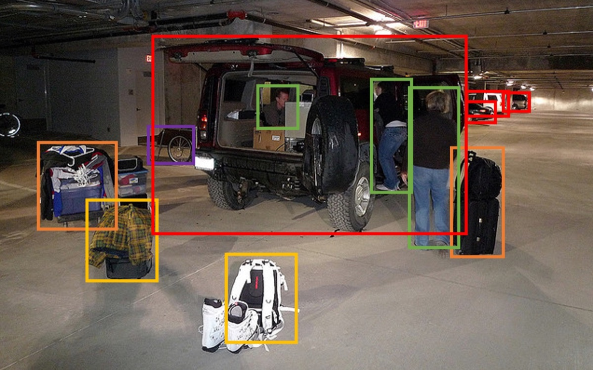
For this photo, the caption says that people try to fit their luggage in an SUV. Three different instructions need three different answers.
- “Where is the vehicle parked?” The answer is one fact: an underground parking area.
- “Describe the objects and their positions.” The answer covers the people, the luggage, the SUV and the space between them.
- “What challenges do the people face?” The answer uses the scene and common knowledge to explain packing limits.
One caption cannot supply all three targets. Captions still help at the start of training, because they teach the model to connect image features to words (Stage 1). Richer pairs of instruction and answer teach the model to change its answer with the task. The next section shows where LLaVA gets such pairs.
LLaVA combines generated instruction data with a light visual connector
LLaVA (Large Language and Vision Assistant, Liu et al. 2023) reuses models that already exist. It adds two things.
- Visual instruction data. Visual instruction data are examples of an instruction about an image and a good answer. A text-only model, GPT-4, writes them from captions and boxes. This model is the teacher.
- A light visual model. The CLIP ViT encoder sees the image. One linear layer (a single learned matrix) maps the result into the input space of the LLM, Vicuna. Vicuna writes the answer. Vicuna is an open chat model that Chiang et al. (2023) made from LLaMA.
The connector makes the visual evidence available to the LLM. The data teach what a useful answer does. Instruction tuning is training a model on pairs of instruction and answer, so that it learns to follow instructions.
The dataset has 158K samples from about 80K unique images (Liu et al. 2023, Section 3 and the caption of Table 3). It has three types of answer.
| Type | Samples | What the answer does |
|---|---|---|
| Conversation | 58K | Gives focused answers, and handles follow-up questions over several turns |
| Detailed description | 23K | Covers many objects and the relations between them |
| Complex reasoning | 77K | Explains what the evidence means, in steps |
The three numbers add up to 158K. The next section explains how GPT-4 writes these samples without a view of the image.
The teacher reads annotations; the student reads pixels
GPT-4, in this pipeline, accepts only text. It cannot see an image. Liu et al. (2023), Section 3, give it two symbolic descriptions of the image instead.
- Captions describe the scene from several points of view.
- Bounding boxes name the objects and place them. A box is four numbers between 0 and 1 that give the position in the image. For example, “person: [0.681, 0.242, 0.774, 0.694]”.
The authors write a few examples for each of the three types by hand. These are the only human annotations in the pipeline. GPT-4 receives them as seed examples in its prompt (in-context learning). It then writes a question and a target answer for each new image from COCO.
The pipeline has two stages. The first stage is offline: the captions and boxes go to the teacher, and the teacher writes a question and an answer. The second stage is training: LLaVA receives the original image and the generated question, and it learns to predict the generated answer. Captions and boxes are only a tool for data generation. The trained LLaVA does not need them as input.
The next section describes the student: the model that reads the image.
The architecture changes the width of the visual vectors and passes them to the LLM
LLaVA has three parts (Liu et al. 2023, Section 4.1, Figure 1, Equation 1).
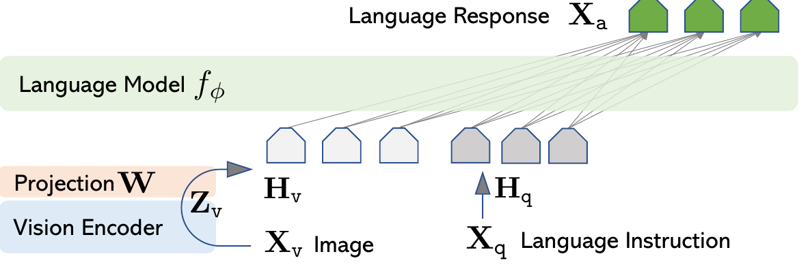
Two equations describe the path of the image:
\[ Z_v = g(X_v), \qquad H_v = W Z_v \]- \(X_v\) is the input image.
- \(g\) is the CLIP ViT-L/14 image encoder (Radford et al. 2021; the model is from Lecture 3). It is frozen: its weights do not change.
- \(Z_v \in \mathbb{R}^{d_v \times N_v}\) holds \(N_v\) visual vectors. Each vector has \(d_v\) numbers. A vector is a learned feature of the image. It does not need to match one object.
- \(W \in \mathbb{R}^{d_L \times d_v}\) is the projection: one learned matrix. It applies to each visual vector in the same way.
- \(H_v \in \mathbb{R}^{d_L \times N_v}\) holds the \(N_v\) projected vectors. Each has \(d_L\) numbers, the width of the Vicuna word embeddings.
Vicuna reads the vectors \(H_v\) and the embeddings of the text tokens together. It then predicts the answer one token at a time. Vicuna is frozen in Stage 1 and trained in Stage 2.
The projection only fits the width of the vectors. It does not write a caption. The paper names other ways to connect the two models: the gated cross-attention of Flamingo and the Q-Former of BLIP-2. It leaves them for future work. The simple connector lets the authors test data changes quickly. The next section trains this connector.
Stage 1 trains only the projection while both models stay frozen
Before Stage 1, the projection \(W\) is untrained. The LLM cannot yet read the visual vectors. Stage 1 teaches \(W\) with image-caption pairs. The paper filters CC3M (Sharma et al. 2018) to 595K pairs (Section 4.2). Each pair becomes a one-turn conversation. The question asks for a brief description. The answer is the original caption.
CLIP stays frozen. Vicuna stays frozen. Only \(W\) learns. The loss is:
\[ \min_{W}\; -\sum_{t} \log p_{W,\phi_0}\!\left(c_t \mid X_v, q, c_{\lt t}\right) \]- \(c_t\) is token \(t\) of the original caption \(c\).
- \(c_{\lt t}\) are the caption tokens before \(t\).
- \(q\) is the request for a brief description.
- \(X_v\) is the image.
- \(\phi_0\) are the Vicuna weights. They are fixed.
- \(p_{W,\phi_0}\) is the probability that the model gives to the next caption token. It depends on \(W\) through the visual vectors.
The loss is the negative log-probability of the caption, summed over its tokens. A lower loss means that the model predicts the caption better. The gradient still passes through Vicuna to reach \(W\), but it does not change Vicuna. The paper describes this stage as training a visual tokenizer that fits the frozen LLM. It uses 1 epoch, learning rate 2e-3 and batch size 128 (Section 5).
After Stage 1 the LLM can read the image. It does not yet follow instructions well. The next section changes that.
Stage 2 trains the projection and Vicuna, and the loss counts only the answers
Stage 2 trains both \(W\) and the Vicuna weights \(\phi\). The trainable set is \(\theta = \{W, \phi\}\). The paper calls this “end-to-end”, but the CLIP encoder stays frozen (Section 4.2).
Two branches use this stage.
- Multimodal chat. The model trains on the 158K generated samples for 3 epochs. The learning rate is 2e-5 and the batch size is 32 (Section 5).
- ScienceQA. The model trains on ScienceQA, a set of multiple-choice science questions. It writes a reason and then picks the answer. This is a separate training run.
A conversation becomes one sequence: the image and the first user question, the first answer, the second question, the second answer, and so on. The model reads the whole sequence. The loss uses only the answer positions:
\[ \mathcal{L}(\theta) = -\sum_{i \in \mathcal{A}} \log p_\theta\!\left(x_i \mid X_v, x_{\lt i}\right) \]- \(x_i\) is token \(i\) of the sequence.
- \(\mathcal{A}\) is the set of positions that belong to the assistant answers. The paper also trains the model to predict where an answer stops.
- \(x_{\lt i}\) are all tokens before position \(i\): earlier questions, earlier answers and the system message.
- \(X_v\) is the image.
Question tokens give context but add nothing to the loss. Answer tokens add to the loss. Part B returns to this idea as the loss mask in nanoVLM.
The last LLaVA section asks how to measure whether the answers are good.
LLaVA-Bench scores answer quality against a reference, not the share of correct answers
Liu et al. (2023), Section 5, use three tests.
- LLaVA-Bench (COCO): 30 images from COCO-Val-2014, with 3 questions each (conversation, detailed description, complex reasoning): 90 questions.
- LLaVA-Bench (In-the-Wild): 24 images and 60 questions. The images include indoor and outdoor scenes, memes, paintings and sketches.
- ScienceQA: multiple-choice questions. The score is accuracy.
An open answer has no single correct string. The authors use a judge: a model that rates answers. A benchmark that uses a judge model is LLM-as-judge. The steps are:
- LLaVA receives the image and the question. It writes an answer.
- Text-only GPT-4 receives a text description of the image and the same question. It writes a reference answer. The paper calls it an approximate upper bound.
- A GPT-4 judge sees the description, the question and both answers. It rates each answer from 1 to 10 for helpfulness, relevance, accuracy and level of detail.
- Score = 100 × (rating of LLaVA) ÷ (rating of the reference).
The score compares answer quality with the reference. It is not the share of correct answers. A score of 100 means that the judge rates LLaVA as high as the reference.
On In-the-Wild, the overall relative scores in Table 5 are:
| Model | Conversation | Detail | Complex reasoning | All |
|---|---|---|---|---|
| OpenFlamingo | 19.3 | 19.0 | 19.1 | 19.1 |
| BLIP-2 | 54.6 | 29.1 | 32.9 | 38.1 |
| LLaVA | 57.3 | 52.5 | 81.7 | 67.3 |
LLaVA scores 67.3, against 38.1 for BLIP-2 and 19.1 for OpenFlamingo (Table 5; the table gives mean and standard deviation over three runs). The two other models mostly describe the image, so they do worse on instructions. On ScienceQA, LLaVA reaches 90.92% accuracy (Table 7; trained for 12 epochs, with the reason written before the answer). The paper reports the previous best as 91.68%. These tests use GPT-4 as the judge and a small set of questions, so the scores show a trend, not a precise ranking.
LLaVA is now defined: the data, the architecture, two stages and a test. The next segment of Part B builds the same steps in a small model, nanoVLM, and asks how many tokens an image gives to the LLM.
nanoVLM puts the three parts of LLaVA in four files
The LLaVA section gave the recipe: an image encoder, a connector and a language model. This section shows the same recipe as running code. The code is nanoVLM (Wiedmann et al., 2025), a small open-source project, read at commit 4e0c096 (27 Oct 2025). The question: where does each part of LLaVA sit in the code?
| Part in LLaVA (Liu et al., 2023) | File in nanoVLM | Lines |
|---|---|---|
| Vision encoder | models/vision_transformer.py | 251 |
| Projection (LLaVA's matrix W) | models/modality_projector.py | 45 |
| Language model | models/language_model.py | 681 |
| All three, joined | models/vision_language_model.py | 310 |
Line counts from wc -l at the commit above. The four files total 1,287 lines (computed here).
The project follows nanoGPT (Karpathy, 2022), the small language-model code from Lecture 1. Compared with nanoGPT, three things are new:
- An image encoder: a vision transformer (ViT, from Lecture 3).
- A projector: a pixel shuffle, then one linear layer.
- A language model that reads vectors, not token ids. It uses RoPE, RMSNorm, a gated MLP and grouped-query attention (GQA), the parts Lecture 1 named.
The next question: which trained model do we read the numbers from?
We read one checkpoint: nanoVLM-230M-8k
A checkpoint is a file of trained weights. All numbers in this section come from lusxvr/nanoVLM-230M-8k (revision a76fa2d, read 10 Oct 2026). The reason: generate.py loads it by default, and the current code reads it.
| Part | Design | Parameters |
|---|---|---|
| Image encoder | SigLIP 2 (Tschannen et al., 2025), size B/16, input 512 px, 12 blocks, width 768 | 86,433,024 |
| Projector | Pixel shuffle with factor 4: 64 tokens per tile | 7,077,888 |
| Language model | SmolLM2-135M (Allal et al., 2025): 30 blocks, width 576, 9 attention heads, 3 key/value heads | 134,553,024 |
| Total | 228,063,936 (sum computed here) |
The parameter counts come from the tensor shapes in model.safetensors. The projector holds 7,077,888 / 228,063,936 = 3.1% of all parameters (computed here). The projector is small, but it is the only part that starts from random weights.
The next question: how many image tokens does one photo give the language model?
One photo gives nanoVLM 1,088 image tokens
A ViT cuts an image into square patches and gives one vector, called a token, for each patch. For a square image with side \(H\) pixels and patch side \(p\) pixels, the number of patches is
\[ N = \left(\frac{H}{p}\right)^{2} \]where \(N\) is the number of patches (tokens) from the image. All results below are computed here.
| Model | \(H\) | \(p\) | Calculation | \(N\) |
|---|---|---|---|---|
| LLaVA (2023) | 224 | 14 | \((224/14)^2 = 16^2\) | 256 |
| LLaVA-1.5 (Liu et al., 2024, Table 2) | 336 | 14 | \((336/14)^2 = 24^2\) | 576 |
| nanoVLM, one tile | 512 | 16 | \((512/16)^2 = 32^2\) | 1,024 |
nanoVLM then applies a pixel shuffle with factor 4. It divides the token count by \(4^2 = 16\): \(1{,}024 / 16 = 64\) tokens per tile.
A large photo does not fit in one 512 × 512 tile. The code resizes the long side of the photo to at most 2,048 pixels (max_img_size) and cuts 512 × 512 tiles. It also adds a global view: the whole photo, resized to 512 × 512. A square 2,048 × 2,048 photo gives 4 × 4 = 16 tiles and 1 global view, so 17 views of 64 tokens each:
This count does not include the 17 tile-marker tokens that label the views (see the prompt section below). The next question: how does the pixel shuffle make 1,024 vectors into 64?
Pixel shuffle joins each 4 × 4 block of patches into one vector
The encoder returns a 32 × 32 grid of vectors. Each vector has width 768, which means 768 numbers. Pixel shuffle cuts the grid into blocks of 4 × 4 patches. It puts the 16 vectors of one block end to end, and the result is one vector of 16 × 768 = 12,288 numbers (computed here). The grid becomes 8 × 8 vectors:
- Before: 1,024 vectors of width 768.
- After: 64 vectors of width 12,288.
Patches that are neighbors in the image stay together in one vector. The language model gets 16 times fewer image tokens. No information is thrown away at this step: the 16 vectors are rearranged, not averaged. The method comes from small VLMs; Marafioti et al. (2025) describe it for SmolVLM, Fig. 4. The next question: how big is the layer that follows?
The projector is one linear layer with 7,077,888 weights
The file models/modality_projector.py has 45 lines. These lines set the layer sizes and build the layer:
self.input_dim = cfg.vit_hidden_dim * (cfg.mp_pixel_shuffle_factor**2)
self.output_dim = cfg.lm_hidden_dim
...
self.proj = nn.Linear(self.input_dim, self.output_dim, bias=False)
...
def forward(self, x):
x = self.pixel_shuffle(x)
x = self.proj(x)Compute the parameter count one step at a time (all computed here):
- Input width:
vit_hidden_dim× factor² = 768 × 4² = 12,288. - Output width:
lm_hidden_dim= 576, the width of the language model. - A linear layer without bias has input width × output width weights: 12,288 × 576 = 7,077,888.
The checkpoint agrees: it stores MP.proj.weight with shape [576, 12288]. The forward pass has two steps: shuffle, then multiply. The output is 64 vectors of width 576 per tile. The next question: how do these vectors reach the language model?
The prompt holds 64 placeholder tokens for each tile
The language model takes one sequence. The code first writes the prompt as text, with a placeholder token <|image|> for every image vector. The function in data/processors.py builds the string (the lines below keep only the core):
if hasattr(tokenizer, "global_image_token"):
image_string += tokenizer.global_image_token
image_string += tokenizer.image_token * mp_image_token_length
if n_h == 1 and n_w == 1: # only one patch: it is the global image
continue
for i in range(n_h):
for j in range(n_w):
image_string += getattr(tokenizer, f'r{i+1}c{j+1}')
image_string += tokenizer.image_token * mp_image_token_lengthHere mp_image_token_length is 64. The code writes a global-image marker and 64 placeholders first. Then, for each tile, it writes a marker r{i}c{j} (row i, column j) and 64 placeholders. With the chat template of this checkpoint, a square photo gives:
<|im_start|>user
<|global_image|> <|image|>×64 <row_1_col_1> <|image|>×64 … <row_4_col_4> <|image|>×64 What is this?<|im_end|>
<|im_start|>assistantEach placeholder is one token with one id. The markers add 1 + 16 = 17 tokens, so the image part of this prompt has 1,088 + 17 = 1,105 tokens (computed here), before the question. At this point the placeholders carry no image data. The next question: where does the image data go in?
nanoVLM writes the image vectors over the placeholders
An embedding is a vector for one token id. The language model reads embeddings, not ids. The forward pass in models/vision_language_model.py works in four steps:
token_embd = self.decoder.token_embedding(input_ids) # [B, T_sequence, D_lm]
if images_tensor is not None:
image_embd = self.vision_encoder(images_tensor)
image_embd = self.MP(image_embd) # [num_images, mp_image_token_length, D_lm]
token_embd = self._replace_img_tokens_with_embd(input_ids, token_embd, image_embd)
# inside _replace_img_tokens_with_embd:
mask = (input_ids == self.tokenizer.image_token_id)
updated_token_embd[mask] = image_embd.view(-1, image_embd.size(-1)).to(updated_token_embd.dtype)- Every token id, including the placeholders, gets its embedding. \(B\) is the batch size, \(T_{\text{sequence}}\) the sequence length, \(D_{\text{lm}}\) = 576 the embedding width.
- The vision encoder turns each tile into patch vectors, and the projector turns them into 64 vectors of width \(D_{\text{lm}}\).
- The code finds the positions where the id equals the image-token id. It builds a Boolean mask of these positions.
- It flattens the image vectors into one list and writes them into the masked positions. The order is the tile order, so the first 64 vectors fill the first 64 placeholders.
The placeholder embeddings are lost; the image vectors replace them. After this step the language model treats all positions the same way. The next question: during training, which positions count in the loss?
The loss counts only the tokens of the answer
The model predicts the next token at every position. The loss is the average cross-entropy over some of these positions only. In the deck's notation, which restates the answer set of LLaVA's stage-2 loss:
\[ \mathcal{L}(\theta) = -\,\frac{\sum_t m_t \,\log p_\theta\!\left(x_{t+1} \mid x_{\le t}\right)}{\sum_t m_t}, \qquad m_t = \begin{cases} 1 & x_{t+1} \text{ is in an answer} \\ 0 & \text{otherwise (label } {-100}\text{)} \end{cases} \]- \(\theta\): the model parameters.
- \(x_t\): the token at position \(t\); \(x_{\le t}\) is all tokens up to and including position \(t\).
- \(p_\theta(x_{t+1} \mid x_{\le t})\): the probability that the model gives to the true next token.
- \(m_t\): the mask. It is 1 where the next token belongs to an answer, and 0 elsewhere.
- The denominator \(\sum_t m_t\) is the number of answer tokens, so the loss is a mean over answer tokens.
Example with a toy answer "A cat" (tokens are schematic). Each row gives the input token and its label, the token that the model must predict from that position:
| Input token | Label | \(m_t\) |
|---|---|---|
| image tokens and question | −100 | 0 |
| <|im_start|> | −100 | 0 |
| assistant | −100 | 0 |
| ⏎ (line break) | A | 1 |
| A | cat | 1 |
| cat | <|im_end|> | 1 |
| <|im_end|> | ⏎ | 1 |
| ⏎ (last position) | −100 | 0 |
The image tokens are inside \(x_{\le t}\): the model reads them but does not predict them. The answer includes <|im_end|>, so the model learns when to stop. The same loss appears in Lecture 1 (cross-entropy) and Lecture 2 (SFT loss and mask). The next question: how does the code build this mask?
Label −100 removes a token from the loss
Two places in the code do the work. In data/datasets.py, the code walks over the chat messages and sets the mask to 1 on assistant messages:
if msg["role"] == "assistant":
start = cursor + self.prefix_len
end = cursor + seg_len
mask[start:end] = [1] * (end - start)
labels = input_ids.clone().masked_fill(~mask, -100)
labels = labels.roll(-1) # shift labels for causal LM
labels[-1] = -100 # last token has no targetRead it step by step:
cursoris the start of the current message in the token list;seg_lenis its length.prefix_lenskips the fixed header of the assistant turn, so the mask starts at the first answer token.masked_fill(~mask, -100)copies the input ids as labels and sets every position outside the answer to −100.roll(-1)moves every label one place to the left. The label at position \(t\) is now the token at \(t+1\): each position predicts the next token.- The roll wraps the first label around to the end, so the last label is set to −100.
In models/vision_language_model.py, the loss is one call:
loss = F.cross_entropy(logits.reshape(-1, logits.size(-1)),
targets.reshape(-1), ignore_index=-100)ignore_index=-100 makes the function skip positions with that label. The default mean is therefore taken over answer tokens only. This matches \(\sum_t m_t\) in the formula. The next question: with this loss, how are the three parts trained?
nanoVLM trains all three parts, at three learning rates
The learning rate is the step size of the optimizer. nanoVLM gives each part its own rate. In models/config.py:
lr_mp: float = 0.00512
lr_vision_backbone: float = 5e-5
lr_language_backbone: float = 5e-5In train.py, each part becomes one optimizer group, and a rate of 0 freezes the part:
if train_cfg.lr_mp > 0:
param_groups.append({'params': list(model.MP.parameters()), 'lr': train_cfg.lr_mp})The projector starts from random weights, and the other two parts are pretrained. The projector rate is 0.00512 / 0.00005 = 102.4 times larger (computed here). The code comments say that fine-tuning the backbones at a low rate makes training easier than a full freeze. LLaVA (Liu et al., 2023), §4.2, uses two stages: first only the connector, then connector and language model. nanoVLM trains all three in one run. The next question: how does the trained model write an answer?
The model reads the image once; the KV cache keeps it
Generation runs in two phases in generate:
- Prefill. One pass reads the whole prompt: image vectors and question. It fills the KV cache, the store of keys and values that attention has computed for earlier positions.
- Decode. A loop runs for at most
max_new_tokenssteps. Each step reads the cache and adds only the key and value of the new token.
for _ in range(max_new_tokens):
...
next_token_id = torch.multinomial(probs, num_samples=1)
...
next_token_embed = self.decoder.token_embedding(next_token_id) # [B, 1, D_lm]
decode_step_output, kv_cache_list = self.decoder(
next_token_embed, attention_mask=attention_mask,
kv_cache=kv_cache_list, start_pos=current_token_start_pos)In each step the code samples the next token from the probabilities with torch.multinomial, embeds it, and feeds only this one embedding back. The image vectors never pass through the encoder again. The default sampling settings in the function signature are top-k 50, top-p 0.9 and temperature 0.5. The next question: how does such a small model behave in practice?
SmolVLM-256M runs in a browser
The demo is the Hugging Face Space HuggingFaceTB/SmolVLM-256M-Instruct-WebGPU (Apache-2.0). SmolVLM-256M (Marafioti et al., 2025) has the same kinds of parts as nanoVLM: a SigLIP B/16 encoder (the nanoVLM checkpoint above uses SigLIP 2), a pixel shuffle and SmolLM2-135M. The demo runs on the viewer's device with WebGPU.
Three prompts to try, in this order:
- "Describe the image."
- "What is unusual about this image?"
- A question about an object that is not in the photo.
The third prompt tests whether a small model says that the object is absent or invents it. nanoVLM (Wiedmann et al., 2025) trains the same kind of model; the next part shows a larger one.
Part B in one view
| Step | What happens | Result in nanoVLM-230M-8k |
|---|---|---|
| Encode | The ViT turns each 512 × 512 tile into patch vectors | 32 × 32 = 1,024 vectors of width 768 |
| Project | Pixel shuffle, then one linear layer | 64 vectors of width 576 per tile; 7,077,888 weights |
| Place | The vectors replace the placeholder embeddings | 17 views × 64 = 1,088 image tokens for a 2,048 × 2,048 photo |
| Train | Cross-entropy on answer tokens only; three learning rates | Label −100 on all other positions |
| Generate | Prefill reads the image once; decode adds one token at a time | KV cache keeps the image keys and values |
Part B used a small model. Part C asks what a frontier VLM adds, and what it can do beyond answering questions about an image: Part C.
Advanced topics and today's state of the art
Part C asks how a strong VLM works inside, and where VLMs go next. It has five segments: Qwen3-VL, building a VLM, making it act, acting in the world, and today's state of the art with safety.
This part follows Georgia Tech CS 8803-VLM, Lecture 6 (Wang et al. (2026)) and Lecture 1 (Kira (2026)). The text is ours; the results come from the papers cited.
Part B built a small VLM; Part C looks at a frontier one
Part B ended with a complete recipe for a small VLM, in three parts and one warning:
- Data. A text-only teacher model turns captions and bounding boxes into questions and answers.
- Model. The image becomes patches, and the patches become vectors. Pixel shuffle and one linear layer shrink and map the vectors. They then fill placeholder positions in the prompt.
- Loss. The loss is next-token cross-entropy on the answer tokens only. Every other position carries the label −100, which the loss ignores.
- Limits. A judge score is not accuracy. A model that sees two objects does not always see the relation between them.
Part C uses the same three questions (why, how, results) for each method. It starts with one recent model family, Qwen3-VL, described in the technical report by Bai et al. (2025). The next section states the problem the Qwen team set out to solve.
Qwen3-VL must add vision without losing language skill
The Qwen3-VL report starts from a strong language model, Qwen3. The team does not want to lose any language skill when it adds vision. The question is how to add three things at once: rich visual understanding, a long context, and useful actions (Bai et al., 2025, Sections 1–2).
The family has six models. Four are dense: 2B, 4B, 8B and 32B parameters. Two are mixture-of-experts (MoE) models, where each token uses only part of the weights: 30B-A3B and 235B-A22B. The name 235B-A22B means 235 billion parameters in total and 22 billion active for each token. Each model is trained with a context window of up to 256K tokens (Bai et al., 2025, Section 1).
Data moves through the model in four steps:
- The inputs are images, video and documents.
- A vision encoder (SigLIP-2, trained further at dynamic resolution) turns each input into a grid of feature vectors. The grid size follows the input size.
- A merger, which is a two-layer MLP, compresses each 2 × 2 block of features into one visual token with the width of the LLM. Extra mergers serve DeepStack, which the next section explains.
- The Qwen3 decoder reads the visual tokens together with the text tokens. It reasons, grounds objects in the image and uses tools.
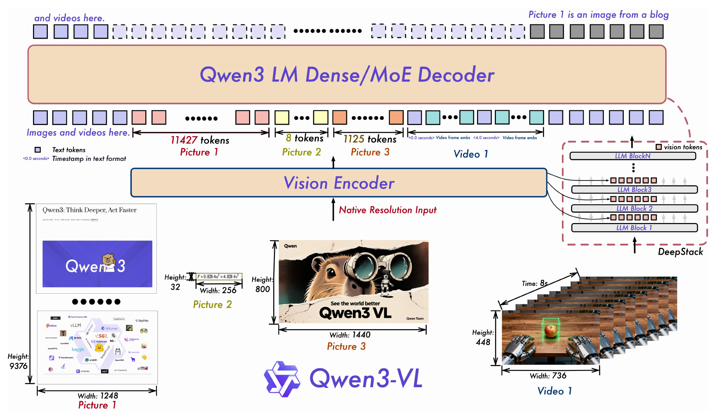
The report lists three architecture upgrades. DeepStack gets its own sections below. The other two are shorter:
- Interleaved MRoPE. MRoPE gives each visual token a position in three axes: time (t), horizontal (h) and vertical (w). The old form gave each axis its own block of embedding dimensions, so the axes used different frequency ranges. The new form interleaves t, h and w across the dimensions, so each axis uses both low and high frequencies (Section 2.1).
- Text timestamps. Each group of video frames gets a text prefix such as
<3.0 seconds>. The old method tied position ids to absolute time, and those ids became large and sparse for long videos. The new method adds a little context length (Section 2.3).
The system goal has four parts: strong perception, reliable transfer of information from vision to language, a 256K multimodal context, and effective training. The first part to look at is how information moves from the vision encoder into the LLM.
DeepStack adds visual features at several layers of the LLM
A usual VLM, such as the one in Part B, feeds the output of the last encoder layer into the LLM once, at its input. DeepStack adds visual information at three more places. It takes features from three levels of the vision encoder: a low, a middle and a high level. A dedicated merger maps each set to the LLM width. Each result is added to the hidden states of one of the first three LLM layers (Bai et al., 2025, Section 2.2 and Fig. 1).
The report credits the idea to DeepStack by Meng et al. (2024). The original stacks tokens from several image scales. Qwen3-VL instead takes features from several depths of one ViT.
| Source in the vision encoder | Merger | Target in the LLM |
|---|---|---|
| Feature level 1 | M1 | Hidden states of LLM layer 1 |
| Feature level 2 | M2 | Hidden states of LLM layer 2 |
| Feature level 3 | M3 | Hidden states of LLM layer 3 |
The additions go to positions that already exist. The visual tokens keep their places, so the number of positions in the context does not grow.
The equations below write this step by step. Take k = 1, 2, 3:
\[ D_k = M_k\big(F^{(a_k)}\big) \in \mathbb{R}^{N_v \times d_L}, \qquad H^{(k)} = T_k\big(H^{(k-1)}\big) + S_{\mathcal{V}}(D_k) \]- \(F^{(a_k)}\): the feature grid taken from the vision encoder at depth \(a_k\). The report does not give the three depths in the text we read.
- \(M_k\): the merger for level k. It maps the features to the LLM width.
- \(N_v\): the number of visual tokens. \(d_L\): the hidden width of the LLM. So \(D_k\) has one row of width \(d_L\) for each visual token.
- \(T_k\): LLM layer k. \(H^{(k-1)}\): the hidden states that enter this layer. \(H^{(k)}\): the hidden states that leave it.
- \(S_{\mathcal{V}}\): puts the rows of \(D_k\) at the positions of the visual tokens. Text positions get nothing added.
So layer k runs as usual, and then the projected features of level k are added at the visual positions. The deck marks these equations as schematic.
The report gives a controlled test of DeepStack. A later section shows it. Before that, the next section shows how the report compares Instruct and Thinking versions of the flagship model.
Thinking helps some tasks and does not help others
The question here is whether the Thinking version of a model is better on every task. Table 2 of the report compares the flagship model, Qwen3-VL-235B-A22B, in its Thinking and Instruct versions. The Thinking version writes a long chain of reasoning before it answers. We list five rows from that table (Bai et al., 2025, Table 2, Sections 5.2–5.4).
| Benchmark | Instruct | Thinking | Thinking minus Instruct (computed here) | What the row tests |
|---|---|---|---|---|
| MathVision | 66.5 | 74.6 | +8.1 | Visual mathematical reasoning |
| MUIRBENCH | 73.0 | 80.1 | +7.1 | Multi-image understanding |
| DocVQA test | 97.1 | 96.5 | −0.6 | Document question answering |
| OCRBench | 920 | 875 | −45 | Text recognition (score out of 1,000) |
| Video-MME, no subtitles | 79.2 | 79.0 | −0.2 | General video understanding |
Read each row on its own, from left to right. The scores of different benchmarks do not share one scale. OCRBench uses its own scale, so its difference of −45 cannot be compared with the other rows.
The trend is this. Thinking gains about 7 to 8 points on the two reasoning-heavy tasks, mathematics and multi-image understanding. It loses a little on reading text in documents and on general video. More reasoning does not make visual reading better.
The next question is what data teaches a model to reason about images.
Reasoning data trains perception and reasoning, and a filter forces the image to matter
A wrong answer to a visual maths problem can have three causes: the model misreads the diagram, the model reasons badly, or both. The report therefore builds data for each skill separately. Its authors call this a divide-and-conquer strategy (Bai et al., 2025, Section 3.2.8).
| Skill | Data | Example question type |
|---|---|---|
| Perception | Diagrams drawn by code. 1M point-grounding samples (for example intersection points and corners), 2M perception question-answer pairs and 6M diagram captions. Model ensembles write and check the captions. | Which lines intersect? |
| Reasoning | Over 60M exercises from school and university level, cleaned and reformatted. Over 12M long reasoning samples with images. Each reasoning path is validated and filtered. | What follows from that intersection? |
A second problem is shortcuts. A model can answer some maths questions from the text alone and ignore the image. The report adds a filter for this, called multimodal-necessity filtering. It applies to the long chain-of-thought data for the Thinking models (Section 4.2.2):
- Give a visual maths question to Qwen3-30B-nothink, a text-only model, with the image removed.
- If the model answers correctly, discard the question. Text alone is enough.
- If the model fails, keep the question for further curation. It may need the image.
The point for benchmarks is this. A high score on a visual benchmark means little if the model can ignore the image and use text shortcuts. The next section covers how Qwen3-VL trains on these tasks with reinforcement learning (RL).
Reinforcement learning trains on checkable answers near the edge of what the model can do
Qwen3-VL uses two RL stages. Reasoning RL covers tasks where code or a rule can check the answer: mathematics, code, logic, visual grounding and puzzles. General RL covers instruction following, alignment with human preferences, language consistency and the correction of known errors. It uses rules and model judges (Bai et al., 2025, Section 4.4).
The aim of reasoning RL is to maximise the expected reward:
\[ \max_{\theta}\; \mathbb{E}_{y \sim \pi_\theta(\cdot \mid x)}\big[R(x, y)\big] \]- \(\theta\): the model weights.
- \(x\): an input, which is a question with an image.
- \(\pi_\theta(\cdot \mid x)\): the probability distribution over answers y that the model gives for \(x\).
- \(R(x, y)\): the reward. A rule or a code executor checks answer \(y\), and a correct answer gets a high reward.
- \(\mathbb{E}\): the average over answers that the model samples.
The report names the update method as SAPO, a smooth and adaptive policy-gradient method. The report does not give its update equations, and so we do not give them either. The deck marks the objective as explanatory.
Data selection decides what the model can learn from. The report uses two filters on the queries:
- Sample 16 responses for each query with a preliminary checkpoint of the largest model. Discard a query if all 16 answers are wrong.
- For each model to train, sample 16 responses again. Discard a query if more than 90% of the answers are correct.
The curated pool has about 30K queries. The first filter removes queries that give no signal because nothing succeeds. The second removes queries that the model already solves.
Zero successes in 16 samples is weak evidence that a task is impossible. Let p be the chance of success in one sample, and assume the 16 samples are independent. The chance of no success in 16 samples is
\[ \Pr(\text{no success in 16 trials}) = (1-p)^{16} \]For the toy value \(p = 0.1\), the result is about 0.19 (computed here). A task with a 10% success rate still gives no success in about one in five sets of 16 samples. The first filter therefore also removes some queries that a model could learn from.
The last section of this segment asks how much of Qwen3-VL's quality the report can attribute to one design choice.
The report proves DeepStack with a controlled test and long context only in part
Two kinds of claims appear in the report. A component ablation changes one part and holds the rest fixed. A whole-system claim compares complete models that differ in many ways. The report gives a concrete ablation for DeepStack (Bai et al., 2025, Section 5.12.2, Table 12).
In that test, an internal MoE model named 15B-A2B is pre-trained on 200 billion tokens, with and without DeepStack. The two models are scored on validation sets with no post-training. We list the average and the three rows with the largest gains in the deck's selection.
| Metric | Baseline | DeepStack | Gain (computed here) |
|---|---|---|---|
| Average over 11 benchmarks | 74.7 | 76.0 | +1.3 |
| InfoVQA | 71.9 | 74.2 | +2.3 |
| DocVQA | 89.5 | 91.1 | +1.6 |
| MMMU | 52.9 | 54.1 | +1.2 |
The report says the gain is largest for fine-grained visual tasks, InfoVQA and DocVQA. Not every column rises: TVQA falls from 80.6 to 80.5. The report gives one run for each model. It does not state a spread. The deck adds a second ablation, of the vision encoder. That one uses a 1.7B language model and 1.5T tokens (Table 11), and it tests the encoder, not DeepStack.
The evidence for long context is narrower. The report builds a video needle-in-a-haystack test on Qwen3-VL-235B-A22B-Instruct. A key frame, the needle, goes into a long video. The model must find it and answer a question about it. Videos are sampled at 1 frame per second (Bai et al., 2025, Section 5.12.3, Fig. 3).
| Video length | Context length | Accuracy |
|---|---|---|
| Up to 30 minutes | Up to 256K tokens (the training window) | 100% |
| Up to about 2 hours | Up to 1M tokens (YaRN position extension) | 99.5% |
Three limits apply:
- Scope. The test checks whether the model can find one salient frame. It does not show equally strong reasoning over a long video.
- Extrapolation. The 1M-token case goes beyond the native 256K window. YaRN is a method that stretches the positional encoding to longer inputs.
- Fairness. In the video benchmark comparison (Section 5.9), the frame caps differ: Qwen3-VL 2,048, Gemini 2.5 Pro 512, GPT-5 256, Claude Opus 4.1 100. The report says the comparison cannot guarantee full fairness.
Qwen3-VL reads images, video and documents and answers with text. The next question for Part C is how to build such a model from the start, and how to make it produce images, not only read them.
Chameleon and BAGEL: one model reads and draws
Qwen3-VL, the model of the previous sections, takes images and text as input and writes only text. This section asks a new question. Can one model also produce images, so that it reads and draws?
A model that accepts and produces several modalities is an any-to-any model. The deck shows two designs for it.
Chameleon Team (2024) uses early fusion (the model mixes the modalities at its input). An image tokenizer cuts each 512 × 512 image into 1,024 discrete tokens. The tokens come from a codebook of 8,192 image entries (Section 2.1 of the paper). The text and image tokens share one vocabulary of 65,536 entries. A single autoregressive transformer then predicts the next token, whether it is a word or a part of an image. For output, an image de-tokenizer turns the predicted image tokens back into pixels. Special "Start Image" and "End Image" tokens mark where an image begins and ends in the stream.
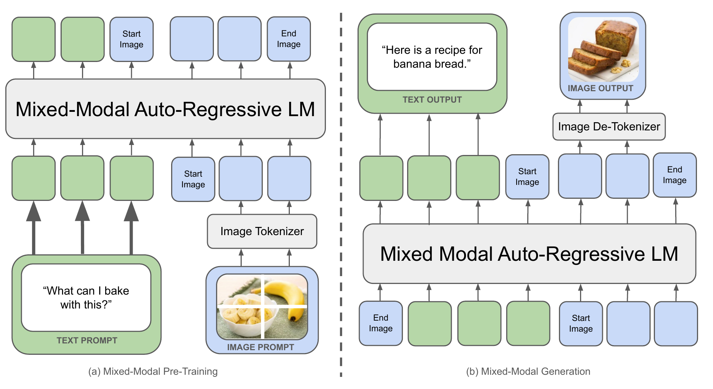
Deng et al. (2025) make a different choice in BAGEL. The model has two transformer experts (separate sets of weights) that share one self-attention stack. The understanding expert predicts the next text token. The generation expert predicts a "velocity" (the direction in which a noisy image latent must move toward a clean image, the method called rectified flow). Both experts see all text and image tokens through the shared attention. The paper calls this design Mixture-of-Transformer-Experts.
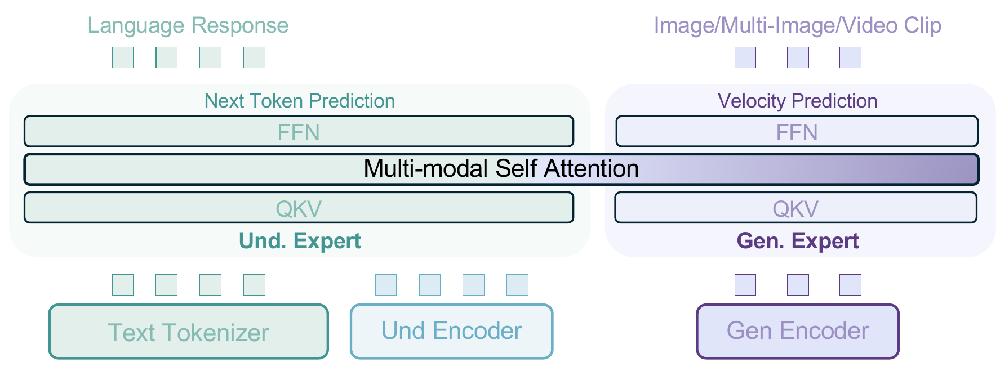
The deck takes these two models from the reference lecture by Kira (Kira 2026, lecture 1). The next question is which other signals a model can take in besides images and text.
UniTouch: touch joins the same space
The deck adds one more modality: touch. Yang et al. (2024) train UniTouch. Its input is an image from a touch sensor, which records the shape and texture of a surface under contact. UniTouch links this touch image to the embedding space of a pre-trained vision-language model (the idea from the section on embedding space alignment in Part A).

The figure shows five uses of one touch representation.
- Zero-shot touch understanding: the model compares a touch image with text such as "denim", "cotton" and "nylon". It measures cosine similarity and gives each class a score.
- Cross-modal retrieval: a touch image of a guitar string finds the matching image, audio clip and sentence.
- Touch-LLM: a language model reads the touch image and answers a question about the material and its hardness.
- Image synthesis and touch generation: the model makes a new image from touch, or a touch image from an image or a sentence.
The point is that a new modality needs a new encoder and an alignment step. It does not need a new language model. The next question is whether Chameleon, the first model above, produces better answers than text-only models.
Result: people prefer Chameleon-34B to Gemini-Pro and GPT-4V
The test is a human comparison. Chameleon Team (2024) collected 1,048 prompts. Each prompt asks for an answer with text and images (Section 4.1). Three human annotators see two answers in random order. They choose the better one, or "about the same". The table gives the share of each outcome for Chameleon-34B (Sections 4.1 and 4.2.2, Figure 9b).
| Chameleon-34B against | Chameleon wins | Tie | Chameleon loses |
|---|---|---|---|
| Gemini-Pro (text answer) | 53.5% | 31.2% | 15.3% |
| GPT-4V (text answer) | 46.0% | 31.4% | 22.6% |
| Gemini-Pro with images added (Gemini+) | 41.5% | 34.5% | 24.0% |
| GPT-4V with images added (GPT-4V+) | 35.8% | 31.6% | 32.6% |
Gemini and GPT-4V write text only. The authors made the "+" baselines in two steps. They asked each model to write an image caption inside the answer, and then used DALL-E 3 to draw the image from the caption (Section 4.2). The "+" rows are therefore the stronger baselines.
Chameleon shows that one model can mix text and images in its answers. The next part moves from models that answer to models that act: can a model use a computer?
OSWorld: a model that uses a whole desktop
The deck now moves to the stages "Agents" and "Action and world models" of the roadmap in the reference course (Kira 2026, lecture 1). The first stage is software. A computer-use agent is a model that sees the screen and acts with the mouse and keyboard to finish a task on a computer. The deck names Mind2Web (Deng et al. 2023), a benchmark of web-browsing tasks. OSWorld goes beyond the browser.
Xie et al. (2024) built OSWorld, a test on a whole desktop. The agent works on a virtual machine with a real operating system. The machine has real apps: a file manager, a browser, an office suite, a code editor and a terminal.

- The task is a natural-language instruction, for example "update the bookkeeping sheet with my recent transactions".
- The observation is a screenshot, or an accessibility tree (a text list of the elements on the screen), or both.
- The action is a mouse or keyboard command.
- The success test is a script. It examines the final machine state. It does not judge the agent's steps.
The deck lists what the field works on now: better screenshot grounding, agent memory, and recovery after a wrong action. The next question is how large the gap between agents and people was when the benchmark appeared.
Result: in 2024, people finished 72% of tasks and the best model 12%
OSWorld has 369 tasks on Ubuntu. Xie et al. (2024) report the share of tasks finished (Table 5, "Overall" column).
| Who does the task | Input to the model | Tasks finished |
|---|---|---|
| Humans, not familiar with the software | none | 72.36% |
| GPT-4 (best model) | accessibility tree | 12.24% |
| GPT-4V | screenshot only | 5.26% |
| Claude-3-Opus | screenshot only | 2.42% |
The gap between people and the best model is 60.12 points (computed here). The models that use only the screenshot do worse than GPT-4 with the accessibility tree. The paper names GUI grounding as a main cause. GUI grounding means linking a plan, such as "click Save", to the exact place on the screen.
These are 2024 baseline models. The paper also reports mixed inputs. GPT-4V with a screenshot and the accessibility tree reaches 12.17%. We show the rows the deck chose.
RT-2: robot actions as tokens
The deck now turns to the stage "Action and world models". A vision-language-action model (VLA) is a vision-language model that outputs robot actions. An action token is a vocabulary entry that stands for one value of a robot action.
Brohan et al. (2023) built RT-2 in three steps.
- Write the action as numbers. The action is the change of the robot hand (the end effector): a translation Δ T and a rotation Δ R.
- Cut each number into bins and give each bin a token. In the figure, the answer "132 114 128 5 25 156" is a list of such tokens.
- Train the vision-language model on web question-answer data and on robot data together (co-fine-tuning). The same output vocabulary then carries words and actions.

At run time the robot sends the camera image and the task. The model outputs tokens. The tokens become a hand motion. The robot acts, takes a new image, and the loop repeats (closed-loop control). The web data keeps the model's world knowledge. The robot data teaches the action tokens.
RT-2 is a large model with data from one robot team. The next question is whether an open model can learn from data of many robots.
OpenVLA: the data limits generalist robot models
Kim et al. (2024) built OpenVLA, an open 7-billion-parameter VLA. It fine-tunes a vision-language model (a Llama 2 7B language model with a vision encoder) on 970,000 robot episodes. The deck rounds this to about one million. The episodes come from many types of robot (cross-embodiment data) in the Open X-Embodiment collection.
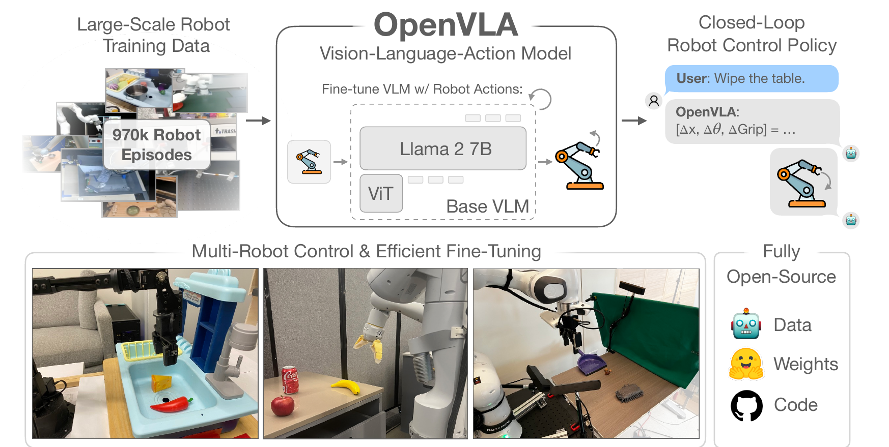
OpenVLA uses the same action-token idea as RT-2. It cuts each continuous action dimension into 256 bins (Section 3.2). It overwrites the 256 least used tokens in the Llama vocabulary with the action tokens.
The deck draws one lesson. Vision-language models learn from billions of web examples. Robot datasets have only about 100,000 to 1 million examples. The paper states this imbalance in its introduction. The deck's conclusion is that robot trajectories limit these models more than the number of parameters. The next question is how a robot moves smoothly, because tokens may be a poor fit.
Diffusion Policy and VLASH: fast, smooth control
The deck says that discrete tokens fit smooth motion at 30–50 Hz poorly. Hz means control steps per second. The deck gives two fixes: predict chunks, and hide the delay. The 30–50 Hz range comes from the reference lecture. The VLASH paper uses 50 Hz in its experiments.
First fix: predict a chunk. Chi et al. (2023) propose Diffusion Policy. The model does not output one step. It starts from random noise and removes the noise step by step (denoising). The result is a whole sequence of future actions. The model conditions this process on the last few observations. In the figure, the observation sequence Ot enters a denoising network, and the output At is an action sequence over a prediction horizon Tp. The robot executes the first part of the sequence and then predicts the next sequence. The network can use a convolutional network (b) or a transformer (c).
![Left: input is an image observation sequence of a robot pushing a T-shaped block, with robot pose. Output is an action sequence shown as dots that change from scattered noise to a smooth path in three stages. Middle: a general formulation. A diffusion policy takes observations O and an action sequence A with a noise step k and outputs a longer action sequence over a prediction horizon, then the next one starts. Right: two network designs, CNN-based with FiLM conditioning and transformer-based with cross attention.](slides/assets/partC/c-chi2023-fig2.png)
Second fix: hide the delay. A large model needs time to compute an action. This time is the inference delay. If the robot stops and waits, its motion stalls (synchronous inference, panel a). If the robot keeps moving while the model computes, the new actions start from an old state and the path jumps (naive asynchronous inference, panel b). Tang et al. (2025) propose VLASH. It rolls the robot state forward by the actions that run during the delay. In the figure, s3 = s1 + a1 + a2 (s is the robot state and a is an action). The model then predicts actions for the state s3 at which the robot will be when the actions begin. The motion stays smooth and the reaction stays fast.
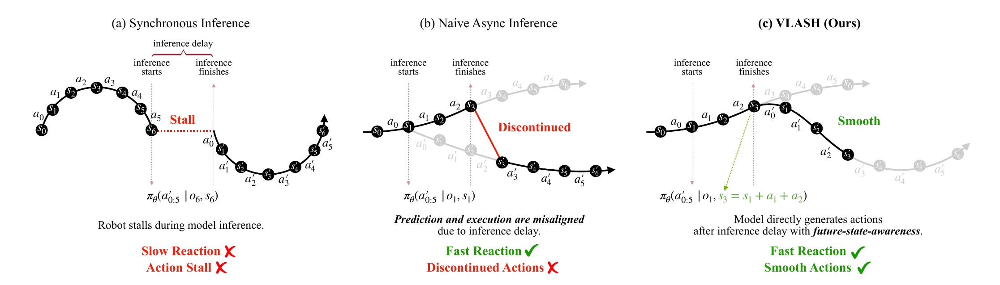
The two fixes solve different problems. Chunks give smooth multi-step motion. Rolling the state forward removes the effect of the delay. Both still need data from the real world. The next question is whether a model can learn from a copy of the world instead.
World models: planning inside a learned copy of the world
A world model is a model that predicts what the world will look like after an action. If the model is good enough, an agent can plan inside it and does not need the real world for every trial.
Ha and Schmidhuber (2018) split the agent into three parts.
- V, the vision model, is a variational autoencoder. It compresses each frame into a small latent vector z.
- M, the memory model, is a recurrent network (RNN). It reads z and its hidden state h, and predicts the next latent vector.
- C, the controller, is a small network. It reads z and h and chooses the action a.
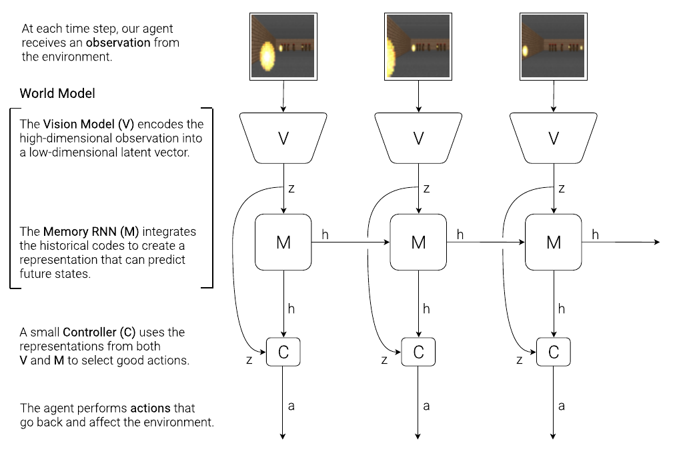
V and M together are the world model. Because M predicts the next latent vector, the controller can train on M's predictions alone. The deck calls this training inside the dream. The deck also notes the change over time. The 2018 version is a VAE with an RNN. The 2026 version is a video generator, the topic of the next section.
DreamZero: a model that predicts frames and actions
A world-action model predicts future video frames and the actions that lead to them, in one model. Ye et al. (2026) build DreamZero, a 14-billion-parameter model of this type. Its inputs are video, language and the robot's own state (proprioception). Its outputs are future video and continuous actions.
![Overview of DreamZero. Top: diverse, non-repetitive pretraining data from bi-manual mobile and single-arm robots, with the note that task diversity matters more than repetition. Middle: the world action model takes videos, language and proprioception and outputs future videos and continuous actions. Left: generalization after post-training on fruit packing and table bussing. Right: task transfer between bimanual arm and human video. Bottom: zero-shot generalization to unseen tasks in unseen environments, and few-shot adaptation to a new robot with 30 minutes of play data.](slides/assets/partC/c-ye2026-fig1.png)
The deck lists three ideas.
- Joint video-action modelling can use supervision from video alone. Video is cheaper than robot teleoperation data (a person drives the robot to record a demonstration).
- The loop is: predict an imagined future, act, observe again, and correct.
- The claimed payoff is zero-shot transfer (no examples of the new case) to unseen tasks, scenes and robot bodies.
The word "claimed" matters. This is a 2026 frontier paper. The figure states the claims; it does not prove them. The next question is what evidence exists for the older idea, the 2018 world model.
Result: a policy trained only in a learned dream beat the best earlier result
Ha and Schmidhuber (2018) test the world model on two tasks. In VizDoom Take Cover the score is the number of time steps the agent survives. The task counts as solved above 750 (Section 3.3). In CarRacing-v0 the score is the average reward over 100 trials. The task counts as solved at 900.
| Task | Agent | Average score |
|---|---|---|
| VizDoom Take Cover | Best earlier result (OpenAI Gym leaderboard) | 820 ± 58 |
| VizDoom Take Cover | World model, trained only inside its dream, tested in the real game | 1092 ± 556 |
| CarRacing-v0 | Best earlier deep RL method (A3C, discrete) | 652 ± 10 |
| CarRacing-v0 | World model (V, M and C together) | 906 ± 21 |
Table 1 of the paper gives the CarRacing rows. Table 2 gives the Take Cover rows (Section 4.4). The dream was run with temperature τ = 1.15. The temperature scales the randomness of M's predictions. A higher τ makes the dream more random. The paper reports that τ = 1.30 gave a lower score than τ = 1.15, with a less risky strategy and a lower variance of returns.
This part covers methods that act. The last two sections ask which models lead today, and what risk comes with an image input.
Today's best vision-language models, 10 Oct 2026
The deck read the Vision Arena leaderboard on 10 Oct 2026 (Arena 2026, page date 9 Oct 2026). The deck asks to check it again in the week of 4 Nov 2026. The score is a rating from human votes. A person sees two answers to one image and picks the better one. The deck shows one closed model per developer, the two best open models, and Qwen3-VL.
| Rank (95% interval) | Model | Developer | Weights | Score |
|---|---|---|---|---|
| 1 (1–10) | claude-fable-5-high | Anthropic | Closed | 1308 |
| 2 (1–19) | qwen3.8-max | Alibaba | Closed | 1301 |
| 6 (1–26) | gemini-3.7-flash-high | Closed | 1297 | |
| 8 (1–37) | gpt-6.1-sol-max | OpenAI | Closed | 1294 |
| 35 (11–47) | glm-5.3-flash | Z.ai | Open (MIT) | 1273 |
| 44 (34–58) | gemma-4-31b | Open (Apache 2.0) | 1262 | |
| 83 (74–91) | qwen3-vl-235b-a22b-instruct | Alibaba | Open (Apache 2.0) | 1215 |
The intervals overlap, so the top rank is not certain. The list changes fast. In May 2026 the Stanford CS231n lecture named Gemini the best closed model (Fei-Fei et al. 2026, lecture 16). Qwen3-VL, released in November 2025, is now at rank 83. These leaderboard rows come from one page on one day and may be out of date when you read this.
An image can carry an attack
A VLM accepts images as input, so an image can carry an attack. The deck shows two types. The deck connects both to a risk that Lecture 2 session 02 described: prompt injection through a tool result. In both cases data and instructions share one input.
Typed text in an image (FigStep). Gong et al. (2025) write a harmful request as typed text inside an image and ask the model to follow it. Often the model does not refuse. On six open-source VLMs, the average attack success rate was 82.50% (abstract). One reason is that the language model learned to refuse harmful text. The image path did not get the same safety training.
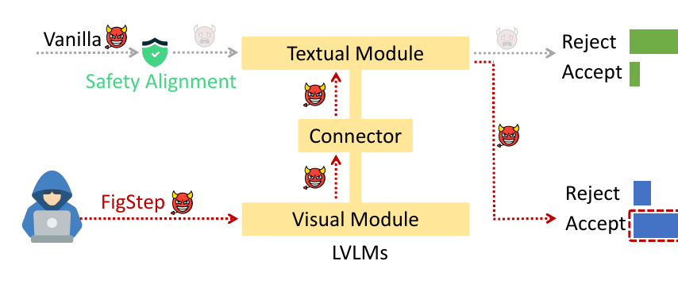
Adversarial pixels. Qi et al. (2024) change each pixel of an image by a very small amount, at most ε = 16/255 on the 0–255 scale. The change is hard to see. One such image made MiniGPT-4 obey harmful requests that it refused before (Fig. 1 and its caption). They optimise the pixels with gradient steps so that the model produces the harmful target text.
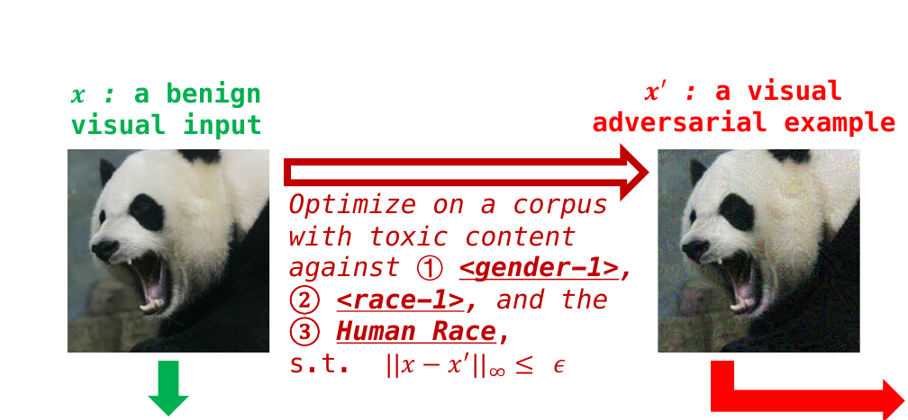
This closes the list of methods in Part C. The next section sums up Part C in one view.
Part C in one view: VLMs learned to see more, to think, and to act
Since 2023, vision-language models have learned to see more, to think, and to act. Part C covered six methods, each with its reason, its method and its result: the Qwen3-VL recipe and thinking (earlier sections of Part C), and the four methods in the table.
| Method | What it adds | Result in this part |
|---|---|---|
| Chameleon, BAGEL, UniTouch | One model for several modalities, and output of images | Chameleon-34B preferred over Gemini-Pro (53.5% against 15.3%) and GPT-4V (46.0% against 22.6%) |
| OSWorld agents | Use of a whole desktop | People 72.36%, best model 12.24% (2024) |
| RT-2, OpenVLA, Diffusion Policy, VLASH, DreamZero | Robot actions as tokens, smooth control, predicted video | Data limits generalist robot models |
| World models | Learning inside a model of the world | CarRacing 906 ± 21 against 652 ± 10 |
Two more points close the part: the leaderboard changes fast, and an image input is an attack surface. The next section sums up all of Part 2.
Topic 7 is covered: each phrase of the syllabus has a place in this lecture
Part C ended with the state of the art and the safety problem. This section asks a different question: did the lecture cover what the syllabus lists for Topic 7? The table matches each phrase of the syllabus to the part of the lecture that covers it.
| Syllabus phrase | Where in this lecture |
|---|---|
| Extending LLMs to other data | Part A and Part B |
| … and prompting | Part B, last segment (the demo of a small model and its generation loop) |
| Especially visual data (large vision-language models) | All three parts |
| CLIP | Lecture 3, and Part A of this lecture |
| Applications; other multi-modal models | Part C |
The next section puts Topic 7 next to the other lectures of Part 2.
Part 2 is one recipe, and Lecture 4 adds images to it
Part 2 of the module has six lectures. Each one gave the multi-modal model of today one ingredient. The table lists them in order.
| Lecture | Topic | What it gave a multi-modal model |
|---|---|---|
| 1 · 01 | Architecture | The Transformer and next-token prediction. The LLM inside every model in this lecture is one. |
| 1 · 02 | Training | Pre-training at scale, and cheap adaptation with LoRA (low-rank adaptation, which trains a small added set of weights). |
| 2 · 01 | Post-training | Instruction tuning and reinforcement learning. A model gives answers, not only continuations of the text. |
| 2 · 02 | Prompting | Prompts, reasoning and agents with a fixed model. |
| 3 | Self-supervised learning | Image encoders trained without labels, such as CLIP. |
| 4 | Multi-modal models | Connect the encoder to the LLM, train the result, prompt it, and let it act. |
Read the table as a sequence of dependencies. Lecture 4 does not add a new kind of model. It joins two parts that earlier lectures built: an image encoder from Lecture 3 and an LLM from Lectures 1 and 2. The training steps of Part B repeat the pre-training and instruction-tuning steps of Lectures 1 and 2. The agents of Part C extend the prompting and agent ideas of Lecture 2 · 02. The next section lists what this recipe does not yet solve.
Five questions are still open
The recipe works, but the parts of this lecture also showed its limits. The deck lists five questions that a student could work on.
- Fewer image tokens without losing detail. An image becomes many visual tokens, and each token adds cost in the LLM (see the token counts in Part B).
- Grounding: counting, positions and small text. A model must tie its words to exact places and quantities in the image. The results in Part C show that these skills are still weaker than general description.
- Long video, and memory over hours. A video has far more frames than a context window can hold.
- One model that understands and generates every modality. Part C showed models that read and draw, and models that handle other modalities. A single model for all of them is not yet standard.
- Agents and robots that stay reliable over long tasks. Each step of an agent can fail, and the errors add up over many steps.
The next section names code and courses for readers who want to start on one of these.
Where to go next: read the code, change one piece, measure
The deck gives one way to learn more: read a small open implementation, change one part of it, and measure the effect.
- Code. nanoGPT (Karpathy (2022)), from Lecture 1, and nanoVLM (Wiedmann et al. (2025)), from Part B. The first is a small LLM. The second adds an image encoder and a projector to a small LLM. LLaVA (Liu et al. (2023)) has a paper and open code.
- Courses. Stanford CS231n, Lecture 16 (vision and language). Georgia Tech CS 8803-VLM (vision-language models and agents). CMU 11-777 (multimodal machine learning).
The links to the code are in Resources at the end of this page. The next section gives a method for revising what the lecture taught.
Revising Part 2: derive again, and judge each method by problem, cost and failure
The deck gives two ways to revise.
- Work each derivation again from the start. Examples in this lecture: the contrastive loss of CLIP, the count of tokens per image, the parameter count of the projector, and the loss mask. Write every symbol with its name before you use it.
- For each method, answer three questions. What problem does it solve? What does it cost? When does it fail? Use the lecture's own methods as a list: CLIP, the Perceiver Resampler, the Q-Former, LLaVA, pixel shuffle, DeepStack and the action tokens of a vision-language-action model.
A method with a clear answer to all three questions is one that you understand well. The last section sums up the lecture.
Where we got to
The question of this lecture was: how did LLMs learn to see? The answer has three parts, and each part has one job.
- The encoder turns the image into vectors. It is usually a Transformer that was trained on images, as CLIP was in Lecture 3.
- The projector is a small network. It maps those vectors to the width of the LLM's token embeddings, so the LLM can read them like words.
- The LLM reads the image tokens and the text tokens together. It predicts the next text token, as it did before it could see.
The recipe has two training stages. The first stage uses image–text pairs to align the projector. The second stage uses instruction data, so the model answers questions about images. Part A compared the ways to connect an encoder to an LLM. Part B built the smallest working version and showed each step in code. Part C showed that the same recipe reaches reasoning, computer use, robot control and image generation.
Five questions remain open: fewer image tokens, exact grounding, long video, one model for every modality, and reliable agents over long tasks. Each one is a place where a small change to an open implementation can give a measurable result.
Resources
Reading
- Radford et al., Learning Transferable Visual Models From Natural Language Supervision, ICML 2021. The CLIP method.
- Alayrac et al., Flamingo: a Visual Language Model for Few-Shot Learning, NeurIPS 2022. The Perceiver Resampler and gated cross-attention.
- Liu et al., Visual Instruction Tuning, NeurIPS 2023. The method (LLaVA) and the benchmark.
- Bai et al., Qwen3-VL Technical Report, 2025. The model and its training recipe.
The official reading list for the module is on Canvas.
Code
- huggingface/nanoVLM — the small vision-language model used in Part B.
- haotian-liu/LLaVA — the open code of LLaVA.
References
Every work cited on this page, in APA style with shortened author lists. Titles link to the paper.
End of Part 2
This is the last lecture of Part 2. Logistics for the coming weeks are on Canvas.